Tel : +82-31-899-4503
+82-31-899-4504
+82-31-899-4507
Fax: +82-31-899-4509
sh_lee@crevis.co.kr
dkahn@crevis.co.kr
mysung@crevis.co.kr
USB3Vision Camera USER MANUAL
Sony CMOS Sensor USB3Vision Camera USER MANUAL
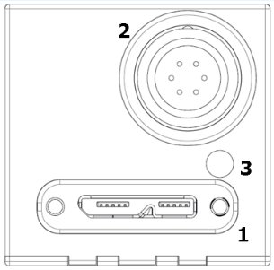
Tel : +82-31-899-4503
+82-31-899-4504
+82-31-899-4507
Fax: +82-31-899-4509
sh_lee@crevis.co.kr
dkahn@crevis.co.kr
mysung@crevis.co.kr
Tel : +82-31-899-4567
tjmoon@crevis.co.kr
29-4, Gigok-ro, Giheung-gu, Yongin-si, Gyeonggi-do, Korea
www.crevis.co.kr
1) CPU : Intel Core i3(최소), i5이상(권장)
2) RAM : 2GB 이상(최소), 8GB 이상(권장)
3) O/S : Windows 7(32bit/64bit) 이상
4) VGA : FHD지원(최소), UHD 지원 이상(권장)
USB3 Vision을 지원하는 이미지 라이브러리를 사용하여 영상을 취득할 수 있습니다. (단, 별도의 Driver가 필요할 수 있음)
주변 온도 변화에 따라 데이터 출력이 변할 수 있으므로 일정하게 온도를 유지하십시오. 보다 안정적인 동작을 위해 40mm x 60mm x 10mm 이상의 방열판을 제품에 결합하여 사용하는 것을 권장합니다.
카메라의 현재 상태를 카메라 뒷면의 LED 를 통해 확인이 가능합니다. 호스트와 카메라간의 연결이 제한되거나 영상 취득에 실패할 경우 LED의 상태를 확인하십시오.
제품 자체에 방수 기능이 없으므로 지나친 습기에 노출되지 않도록 주의하셔야 합니다.
입출력신호가 강한 자기장 및 전기장에 노출되면 신호의 왜곡을 일으킬 수 있으므로 주의하셔야 합니다.
소비전력은 사용환경에 따라 차이가 나지만 전력 소비량이 높으므로 제품 주변을 밀폐시키거나 공기흐름을 차단하지 말고 통풍성을 유지하여야 합니다.
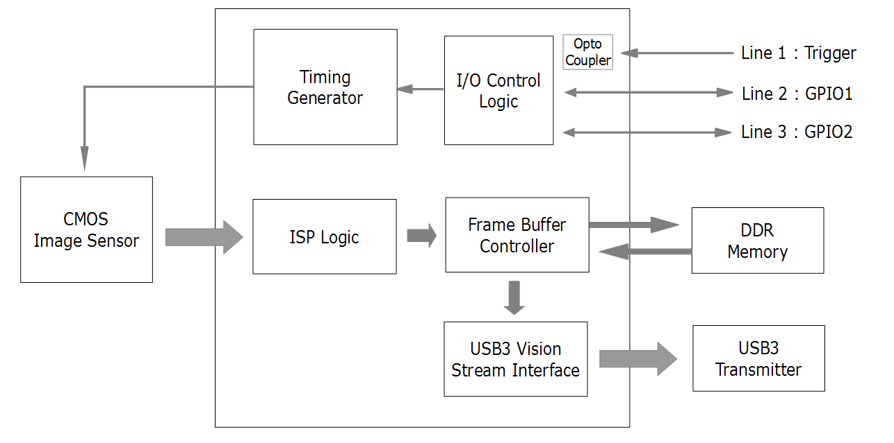
Spec. | MU-A040M/K -523 | MU-A160M/K -226 | MU-A320M/K -118 | MU-A320M/K -55 | MU-A500M/K -35(-75) | MU-A121M/K -23 | MU-A121R/L -31 | MU-A201R/L -18 |
|---|---|---|---|---|---|---|---|---|
Sensor | 0.4M | 1.58M | 3.2M | 3.2M | 5M | 12M | 12.1M | 20.1M |
Sensor | IMX287LLR(LQR) | IIMX273LLR(LQR) | IMX252LLR(LQR) | IMX265LLR(LQR) | IMX264 LL(Q)R (IMX250LL(Q)R) | IMX304LL(Q)R-C | IMX226CL(Q)J-C | IMX183CL(Q)J-C |
Sensor Format | 1/2.9” | 1/2.9” | 1/1.8” | 1/1.8” | 2/3” | 1.1” | 1/1.7” | 1” |
Pixel Size(um) | 3.45 x 3.45 | 6.90 x 6.90 | 3.45 x 3.45 | 3.45 x 3.45 | 3.45 x 3.45 | 3.45 x 3.45 | 1.85 x 1.85 | 2.4 x 2.4 |
Active Pixels | 728 x 544 | 1456 x 1088 | 2064 x 1544 | 2064 x 1544 | 2464 x 2056 | 4112 x 3008 | 4072 x 3046 | 5496 x 3672 |
Frame Rate (Max)* | 523fps | 226fps | 118ps | 55fps | 35fps(75fps) | 23fps | 30fps | 18fps |
Exposure Time | 1us ~ 3sec (* Exposure Offset Excluded) | 1us ~ 3sec (* Exposure Offset Excluded) | 1us ~ 3sec (* Exposure Offset Excluded) | 1us ~ 3sec (* Exposure Offset Excluded) | 1us ~ 3sec (* Exposure Offset Excluded) | 1us ~ 3sec (* Exposure Offset Excluded) | Min.99us | Min.141us |
Scanning Method | Full / ROI(Horizontal+Vertical) / Reverse(X,Y,All) / Decimation(Horizontal+Vertical) | Full / ROI(Horizontal+Vertical) / Reverse(X,Y,All) / Decimation(Horizontal+Vertical) | Full / ROI(Horizontal+Vertical) / Reverse(X,Y,All) / Decimation(Horizontal+Vertical) | Full / ROI(Horizontal+Vertical) / Reverse(X,Y,All) / Decimation(Horizontal+Vertical) | Full / ROI(Horizontal+Vertical) / Reverse(X,Y,All) / Decimation(Horizontal+Vertical) | Full / ROI(Horizontal+Vertical) / Reverse(X,Y,All) / Decimation(Horizontal+Vertical) | Full / Reverse(X,Y,All) ROI(Horizontal+Vertical) | Full / Reverse(X,Y,All) ROI(Horizontal+Vertical) |
Binning | X | O (Only Mono Model) | O (Only Mono Model) | X | X | X | X | X |
ADC Bit Depth | 8, 12bit | 8, 10, 12bit | 8, 10, 12bit | 12bit | 12bit | 12bit | 10, 12bit | 10, 12bit |
Sync. System | Internal(Freerun), External(6-pin Circular port), Software trigger via PC | Internal(Freerun), External(6-pin Circular port), Software trigger via PC | Internal(Freerun), External(6-pin Circular port), Software trigger via PC | Internal(Freerun), External(6-pin Circular port), Software trigger via PC | Internal(Freerun), External(6-pin Circular port), Software trigger via PC | Internal(Freerun), External(6-pin Circular port), Software trigger via PC | Internal(Freerun), External(6-pin Circular port), Software trigger via PC | Internal(Freerun), External(6-pin Circular port), Software trigger via PC |
Trigger Mode | Timed, Trigger Width | Timed, Trigger Width | Timed, Trigger Width | Timed, Trigger Width | Timed, Trigger Width | Timed, Trigger Width | Timed, Trigger Width | Timed, Trigger Width |
Shutter | Global Shutter | Global Shutter | Global Shutter | Global Shutter | Global Shutter | Global Shutter | Rolling Shutter / Global Reset | Rolling Shutter / Global Reset |
Gain Abs | Analog : 0 ~ 27dB (1x ~ 24x) Digital : 0 ~ 19dB (1x ~ 9x) | Analog : 0 ~ 27dB (1x ~ 24x) Digital : 0 ~ 19dB (1x ~ 9x) | Analog : 0 ~ 27dB (1x ~ 24x) Digital : 0 ~ 19dB (1x ~ 9x) | Analog : 0 ~ 27dB (1x ~ 24x) Digital : 0 ~ 19dB (1x ~ 9x) | Analog : 0 ~ 27dB (1x ~ 24x) Digital : 0 ~ 19dB (1x ~ 9x) | Analog : 0 ~ 27dB (1x ~ 24x) Digital : 0 ~ 19dB (1x ~ 9x) | Analog : 0~27dB (1x~22.5x) Digital : 0~189B (1x~9x) | Analog : 0~27dB (1x~22.5x) Digital : 0~189B (1x~9x) |
Black Level | Analog : 0 ~ 255 (8bit) Digital : 0 ~ 4095 (12bit) | Analog : 0 ~ 255 (8bit) Digital : 0 ~ 4095 (12bit) | Analog : 0 ~ 255 (8bit) Digital : 0 ~ 4095 (12bit) | Analog : 0 ~ 255 (8bit) Digital : 0 ~ 4095 (12bit) | Analog : 0 ~ 255 (8bit) Digital : 0 ~ 4095 (12bit) | Analog : 0 ~ 255 (8bit) Digital : 0 ~ 4095 (12bit) | Analog : 0 ~ 255 (8bit) Digital : 0 ~ 4095 (12bit) | Analog : 0 ~ 255 (8bit) Digital : 0 ~ 4095 (12bit) |
LUT & Gamma | Adjustable LUT (12bit to 12bit) or Gamma Correction(0 ~ 3.999) | Adjustable LUT (12bit to 12bit) or Gamma Correction(0 ~ 3.999) | Adjustable LUT (12bit to 12bit) or Gamma Correction(0 ~ 3.999) | Adjustable LUT (12bit to 12bit) or Gamma Correction(0 ~ 3.999) | Adjustable LUT (12bit to 12bit) or Gamma Correction(0 ~ 3.999) | Adjustable LUT (12bit to 12bit) or Gamma Correction(0 ~ 3.999) | Adjustable LUT (12bit to 12bit) or Gamma Correction(0 ~ 3.999) | Adjustable LUT (12bit to 12bit) or Gamma Correction(0 ~ 3.999) |
Auto White Balance | Off / Once / Continuous (Only Color Models) | Off / Once / Continuous (Only Color Models) | Off / Once / Continuous (Only Color Models) | Off / Once / Continuous (Only Color Models) | Off / Once / Continuous (Only Color Models) | Off / Once / Continuous (Only Color Models) | Off / Once / Continuous (Only Color Models) | Off / Once / Continuous (Only Color Models) |
Auto Gain/Exposure | Off / Once / Continuous Auto Exposure(Gain) Lower Limit / Auto Exposure(Gain) Upper Limit | Off / Once / Continuous Auto Exposure(Gain) Lower Limit / Auto Exposure(Gain) Upper Limit | Off / Once / Continuous Auto Exposure(Gain) Lower Limit / Auto Exposure(Gain) Upper Limit | Off / Once / Continuous Auto Exposure(Gain) Lower Limit / Auto Exposure(Gain) Upper Limit | Off / Once / Continuous Auto Exposure(Gain) Lower Limit / Auto Exposure(Gain) Upper Limit | Off / Once / Continuous Auto Exposure(Gain) Lower Limit / Auto Exposure(Gain) Upper Limit | Off / Once / Continuous Auto Exposure(Gain) Lower Limit / Auto Exposure(Gain) Upper Limit | Off / Once / Continuous Auto Exposure(Gain) Lower Limit / Auto Exposure(Gain) Upper Limit |
ROI | Horizontal / Vertical ROI Support | Horizontal / Vertical ROI Support | Horizontal / Vertical ROI Support | Horizontal / Vertical ROI Support | Horizontal / Vertical ROI Support | Horizontal / Vertical ROI Support | Horizontal / Vertical ROI Support | Horizontal / Vertical ROI Support |
Video I/F | Video I/F | USB3.1 Gen.1 (USB 3 Vision Standard 1.1) | USB3.1 Gen.1 (USB 3 Vision Standard 1.1) | USB3.1 Gen.1 (USB 3 Vision Standard 1.1) | USB3.1 Gen.1 (USB 3 Vision Standard 1.1) | USB3.1 Gen.1 (USB 3 Vision Standard 1.1) | USB3.1 Gen.1 (USB 3 Vision Standard 1.1) | USB3.1 Gen.1 (USB 3 Vision Standard 1.1) | USB3.1 Gen.1 (USB 3 Vision Standard 1.1) |
|---|---|---|---|---|---|---|---|---|---|
Video Format | Video Format | Mono Model : Mono8/10/12 Color Model : Mono8/10/12, BayerRG8/10/12, RGB8, BGR8 | Mono Model : Mono8/10/12 Color Model : Mono8/10/12, BayerRG8/10/12, RGB8, BGR8 | Mono Model : Mono8/10/12 Color Model : Mono8/10/12, BayerRG8/10/12, RGB8, BGR8 | Mono Model : Mono8/10/12 Color Model : Mono8/10/12, BayerRG8/10/12, RGB8, BGR8 | Mono Model : Mono8/10/12 Color Model : Mono8/10/12, BayerRG8/10/12, RGB8, BGR8 | Mono Model : Mono8/10/12 Color Model : Mono8/10/12, BayerRG8/10/12, RGB8, BGR8 | Mono Model : Mono8/10/12 Color Model : Mono8/10/12, BayerRG8/10/12, RGB8, BGR8 | Mono Model : Mono8/10/12 Color Model : Mono8/10/12, BayerRG8/10/12, RGB8, BGR8 |
Communication | Communication | USB 3 Vision Standard 1.1 | USB 3 Vision Standard 1.1 | USB 3 Vision Standard 1.1 | USB 3 Vision Standard 1.1 | USB 3 Vision Standard 1.1 | USB 3 Vision Standard 1.1 | USB 3 Vision Standard 1.1 | USB 3 Vision Standard 1.1 |
SNR | SNR | 35dB | 38dB | 36dB | 39dB | 38dB | 38dB | 36dB | 41dB |
Function Control | Function Control | GainAuto, ExposureAuto, BalanceWhiteAuto Acquisition Frame Rate(Adjustable), Line Debouncer, Defective Pixel Correction, Shading Correction(FFC), Noise Reduction Filter, Pattern Noise Removal, Color Transformation | GainAuto, ExposureAuto, BalanceWhiteAuto Acquisition Frame Rate(Adjustable), Line Debouncer, Defective Pixel Correction, Shading Correction(FFC), Noise Reduction Filter, Pattern Noise Removal, Color Transformation | GainAuto, ExposureAuto, BalanceWhiteAuto Acquisition Frame Rate(Adjustable), Line Debouncer, Defective Pixel Correction, Shading Correction(FFC), Noise Reduction Filter, Pattern Noise Removal, Color Transformation | GainAuto, ExposureAuto, BalanceWhiteAuto Acquisition Frame Rate(Adjustable), Line Debouncer, Defective Pixel Correction, Shading Correction(FFC), Noise Reduction Filter, Pattern Noise Removal, Color Transformation | GainAuto, ExposureAuto, BalanceWhiteAuto Acquisition Frame Rate(Adjustable), Line Debouncer, Defective Pixel Correction, Shading Correction(FFC), Noise Reduction Filter, Pattern Noise Removal, Color Transformation | GainAuto, ExposureAuto, BalanceWhiteAuto Acquisition Frame Rate(Adjustable), Line Debouncer, Defective Pixel Correction, Shading Correction(FFC), Noise Reduction Filter, Pattern Noise Removal, Color Transformation | GainAuto, ExposureAuto, BalanceWhiteAuto Acquisition Frame Rate(Adjustable), Line Debouncer, Defective Pixel Correction, Shading Correction(FFC), Noise Reduction Filter, Pattern Noise Removal, Color Transformation | GainAuto, ExposureAuto, BalanceWhiteAuto Acquisition Frame Rate(Adjustable), Line Debouncer, Defective Pixel Correction, Shading Correction(FFC), Noise Reduction Filter, Pattern Noise Removal, Color Transformation |
Lens mount | Lens mount | C mount | C mount | C mount | C mount | C mount | C mount | C mount | C mount |
Optical accuracy | Optical accuracy | Optical center ≤ ± 0.1 mm | Optical center ≤ ± 0.1 mm | Optical center ≤ ± 0.1 mm | Optical center ≤ ± 0.1 mm | Optical center ≤ ± 0.1 mm | Optical center ≤ ± 0.1 mm | Optical center ≤ ± 0.1 mm | Optical center ≤ ± 0.1 mm |
Power Supply | Power Supply | DC(5V ~ 13.2V) or USB3 BUS | DC(5V ~ 13.2V) or USB3 BUS | DC(5V ~ 13.2V) or USB3 BUS | DC(5V ~ 13.2V) or USB3 BUS | DC(5V ~ 13.2V) or USB3 BUS | DC(5V ~ 13.2V) or USB3 BUS | DC(5V ~ 13.2V) or USB3 BUS | DC(5V ~ 13.2V) or USB3 BUS |
Consum- ption | DC | < 4.0W | < 4.0W | < 4.0W | < 4.0W | < 4.0W | < 4.0W | < 4.0W | < 4.0W |
Consum- ption | USB | < 4.0W | < 4.0W | < 4.0W | < 4.0W | < 4.0W | < 4.0W | < 4.0W | < 4.0W |
Weight | Weight | < 44g | < 44g | < 44g | < 44g | < 44g | < 44g | < 44g | < 44g |
Dimension | Dimension | 29 x 29 x 29 ㎜ (Without mount, Connector) | 29 x 29 x 29 ㎜ (Without mount, Connector) | 29 x 29 x 29 ㎜ (Without mount, Connector) | 29 x 29 x 29 ㎜ (Without mount, Connector) | 29 x 29 x 29 ㎜ (Without mount, Connector) | 29 x 29 x 29 ㎜ (Without mount, Connector) | 29 x 29 x 29 ㎜ (Without mount, Connector) | 29 x 29 x 29 ㎜ (Without mount, Connector) |
Operating / Storage | Operating / Storage | 0℃ ~ +40℃ (with < 20~80% RH) /-20℃ ~ +60℃ | 0℃ ~ +40℃ (with < 20~80% RH) /-20℃ ~ +60℃ | 0℃ ~ +40℃ (with < 20~80% RH) /-20℃ ~ +60℃ | 0℃ ~ +40℃ (with < 20~80% RH) /-20℃ ~ +60℃ | 0℃ ~ +40℃ (with < 20~80% RH) /-20℃ ~ +60℃ | 0℃ ~ +40℃ (with < 20~80% RH) /-20℃ ~ +60℃ | 0℃ ~ +40℃ (with < 20~80% RH) /-20℃ ~ +60℃ | 0℃ ~ +40℃ (with < 20~80% RH) /-20℃ ~ +60℃ |
Vibration / Shock | Vibration / Shock | 98 m/s2 (10.0 G) / 490 m/s2(50.0 G) | 98 m/s2 (10.0 G) / 490 m/s2(50.0 G) | 98 m/s2 (10.0 G) / 490 m/s2(50.0 G) | 98 m/s2 (10.0 G) / 490 m/s2(50.0 G) | 98 m/s2 (10.0 G) / 490 m/s2(50.0 G) | 98 m/s2 (10.0 G) / 490 m/s2(50.0 G) | 98 m/s2 (10.0 G) / 490 m/s2(50.0 G) | 98 m/s2 (10.0 G) / 490 m/s2(50.0 G) |
Standard Compliancy | Standard Compliancy | CE (EN61326-1; 2006년; Class A) | CE (EN61326-1; 2006년; Class A) | CE (EN61326-1; 2006년; Class A) | CE (EN61326-1; 2006년; Class A) | CE (EN61326-1; 2006년; Class A) | CE (EN61326-1; 2006년; Class A) | CE (EN61326-1; 2006년; Class A) | CE (EN61326-1; 2006년; Class A) |
Environments | Environments | RoHS / WEEE | RoHS / WEEE | RoHS / WEEE | RoHS / WEEE | RoHS / WEEE | RoHS / WEEE | RoHS / WEEE | RoHS / WEEE |
MU-A040M-523 | MU-A040K-523 |
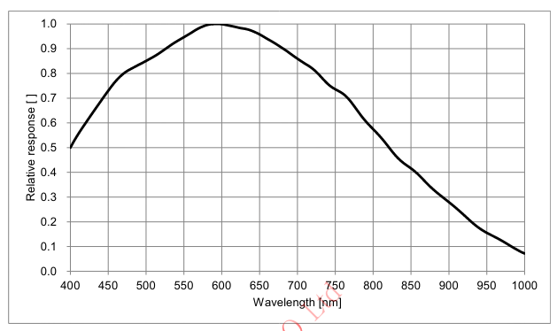 | 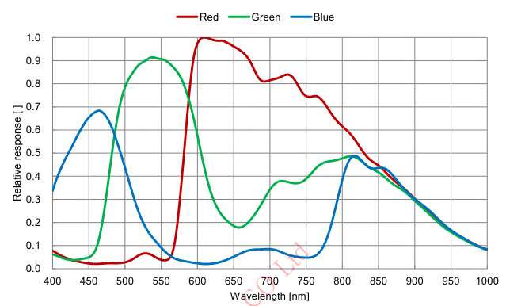 |
MU-A160M-226 | MU-A160K-226 |
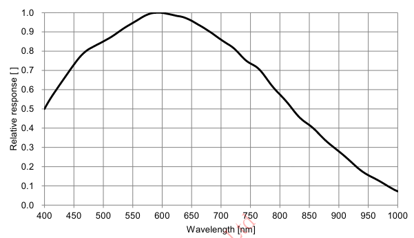 | 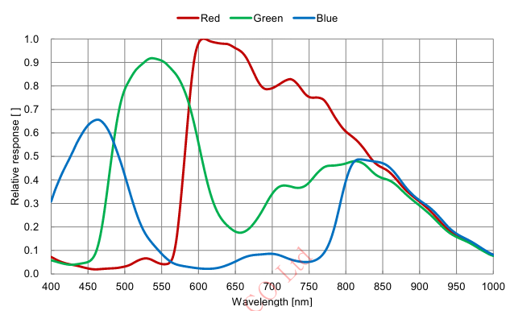 |
MU-A320M-55(-118) | MU-A350K-55(-118) |
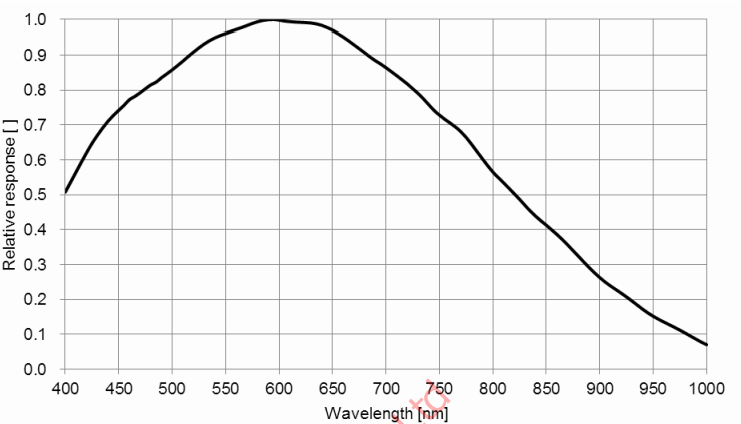 | 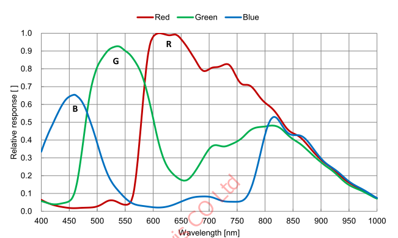 |
MU-A500M-35(-75) | MU-A500K-35(-75) |
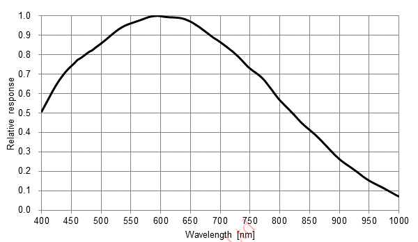 | 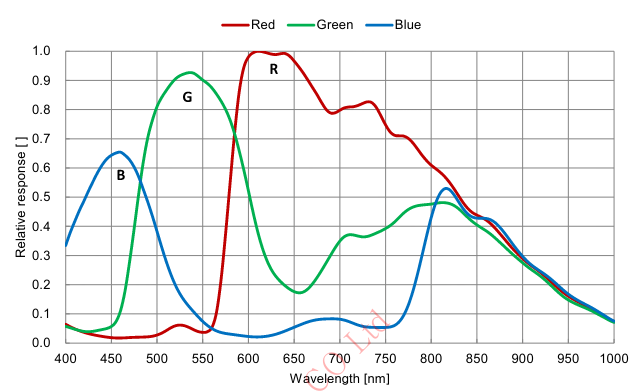 |
MU-A121M-23 | MU-A121K-23 |
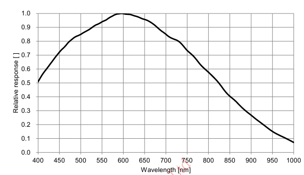 | 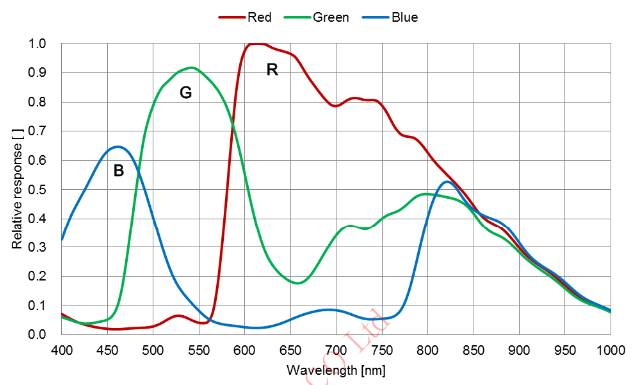 |
MU-A121R-31 | MU-A121L-31 |
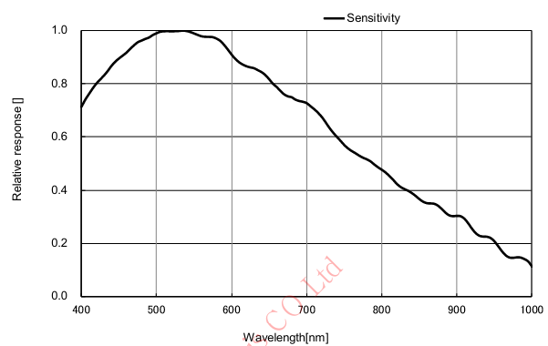 | 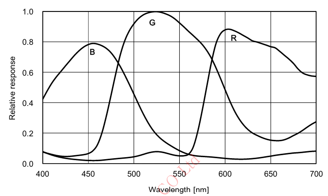 |
MU-A201R-18 | MU-A201L-18 |
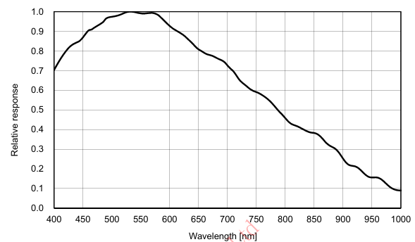 | 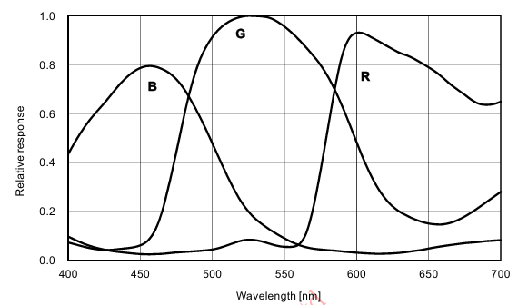 |
NO. | Name | Remark |
|---|---|---|
1 | USB3.1 Gen.1 커넥터 | Type Micro-B |
2 | 전원 & 외부 I/O 커넥터 | 6Pin Circular |
3 | LED 상태표시 | LED |
1) 6 pin Circular Connector
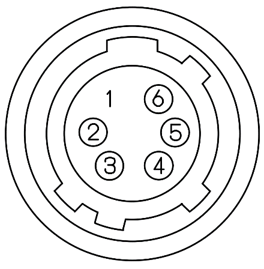 | No. | Name | IN/OUT | Description | Remark |
1 | DC VCC | IN | 5V ~ 13.2V Input Range | ||
2 | TRIGGER+ | IN | Opto-isolated Trigger input + (+2.5V~24V) | ||
3 | GPIO 1 | IN / OUT | General Purpose I/O 1 | ||
4 | GPIO 2 | IN / OUT | General Purpose I/O 2 | ||
5 | TRIGGER- | IN | Opto-isolated Trigger input - | ||
6 | DC GND | IN |
1) Plug & Play 지원.
2) USB 2.0 연결은 지원하지 않습니다.
Off | Red | Orange | Green | |
|---|---|---|---|---|
Flashing LED | Power off or Sleep State (Deep Sleep) | Command entered to a camera. | #1. USB disconnected. - Flashing periodically at 1Hz. #2. Command entered while acquisition. #3. Sleep State (Soft Sleep) - Flashing 2 times. | #1. USB has connected. - USB3 : Flashing periodically at 1Hz. - USB2 : Flashing periodically at 0.5Hz. #2. Image Streaming. |
Solid state | Power off or Sleep State (Deep Sleep) | 1. Camera Initialization failed. 2. Image Sensor not found. | Camera Initialization succeed. | Waiting for trigger. |
- Input
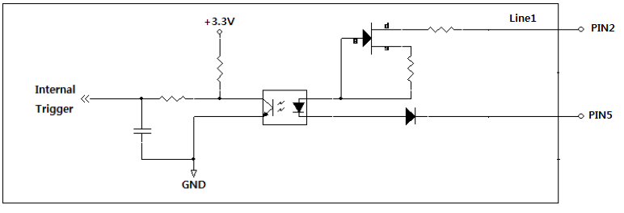
- GPIO
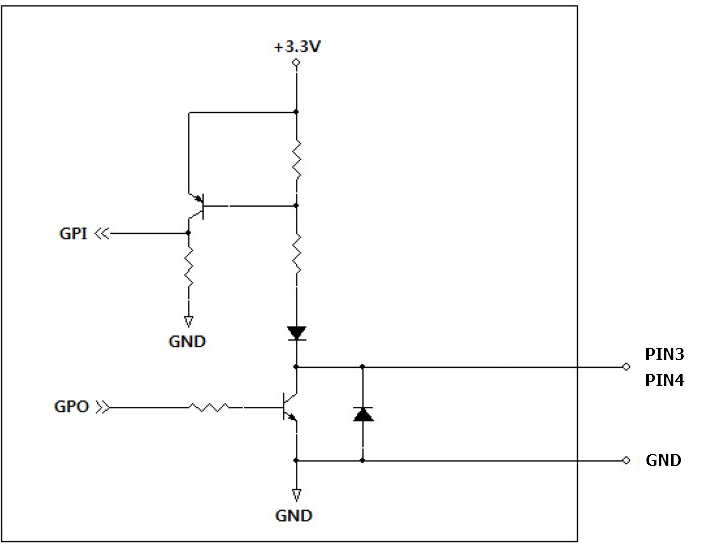
카메라의 각종 상태 모니터링 또는 장치의 상태를 제어할 수 있는 기능입니다.
Item | Setting Value | Description |
|---|---|---|
Device Link Throughput Limit | (Integer) | 카메라 송신부의 최대 Bandwidth를 정의합니다. 이는 카메라의 최대 Frame Rate에 영향을 미칩니다. |
Device Temperature | Command | 카메라의 내부 온도를 측정합니다. |
Devicd Temperature State | Enumeration | 카메라의 온도 상태를 모니터링 합니다. |
Device Reset | Command | 카메라의 전원을 재인가하는 Hard-Reset 기능입니다. |
Device Sleep Mode | Disable, Soft Sleep, Deep Sleep | 카메라를 휴면상태로 전환하여 총 소모전력을 줄입니다. |
카메라에서 Host로 전송하는 이미지 Bandwidth의 최대치를 정의할 수 있습니다. Byte/Sec 단위로 변경이 가능하며, 초기 출하값은 제품별 상이하나 약 340MB/s ~ 360MB/s 입니다. (단, 초기 출하값은 예고 없이 변경될 수 있음)
‘Device Temperature Selector’에 선택된 파츠의 현재 온도를 모니터링 하는 기능입니다. ‘Temperature Update Selector’를 Execute 하는 즉시 온도 정보가 소수점을 포함한 섭씨(℃) 값으로 리턴됩니다. 일부 모델은 이미지 센서의 온도와 FPGA Core board의 온도를 모니터링 할 수 있습니다.
카메라의 내부 온도를 모니터링 하여 ‘Normal’, ‘Warning’, ‘Critical’ 등의 상태로 나타냅니다. 각 상태가 의미하는 내용은 4-18절 ‘Device Temperature State’에 보다 자세히 기술되어 있습니다.
Command로 카메라의 전원을 재인가할 수 있는 Hard-Reset 입니다. 커맨드 입력 즉시 USB 연결이 해제됨과 동시에 카메라의 전원도 재인가 되어 재부팅 됩니다. 따라서 Device Reset 이후 Application에서 카메라를 새로 Open해야 정상적인 사용이 가능합니다.
카메라의 상태를 Sleep 모드로 변경하여 총 소모전력을 줄일 수 있는 기능입니다. Soft Sleep 설정시 이미지 센서가 휴면상태가 되며, Deep Sleep 모드로 설정시 이미지 센서 및FPGA도 휴면상태가 됩니다. 총 소모전력은 최대 80%를 줄일 수 있습니다. Deep Sleep 상태에서 Disable (Normal)로의 전환시, 약 1.4Sec~2Sec의 초기화 시간이 필요합니다.
Device Sleep Mode | Disable (Normal) | Soft Sleep | Deep Sleep |
|---|---|---|---|
LED | 녹색 LED가 주기적으로 깜빡임. | 주황색 LED가 2회 점멸 반복. | LED OFF |
카메라 상태 | 정상 상태 | 이미지센서 : Sleep. 총 소모전력 약 40% 감소. | 이미지센서 및 FPGA : Sleep. 총 소모전력 약 80% 감소. |
카메라의 이미지 출력 Size 및 Format에 대한 설정을 변경할 수 있는 기능 입니다.
Item | Setting Value | Description |
|---|---|---|
Width, Height, Offset X, Offset Y | (Integer) | 이미지의 출력 Size 및 Offset(Pixel 좌표)를 변경합니다. WidthMAX ≥ Offset X + Width HeightMAX ≥ Offset Y + Height |
Decimation Horizontal, Decimation Vertical | 1, 2 | 이미지의 해상도는 낮아지며, Frame Rate은 증가합니다. |
Binning Horizontal, Binning Vertical | 1, 2 | 이미지의 해상도는 낮아지며, 감도 또는 Frame Rate은 증가합니다. |
ReverseX, ReverseY | True / False | 이미지의 상/하 또는 좌/우 반전 기능입니다. |
Pixel Format | Mono8/Bayer8 Mono10/Bayer10 Mono12/Bayer12 RGB8, BGR8 | 이미지를 Host로 전송할 때의 Format을 변경할 수 있습니다. 세부적인 전송 Order는 4.1.4절을 참고해 주시기 바랍니다. |
Test Pattern | Off, Vertical Ramp, Horizontal Ramp | 테스트 이미지를 선택할 수 있습니다. |
Width, Height, Offset X, Offset Y를 설정함으로써 원하는 영역의 이미지만 출력하는 것이 가능합니다.출력 이미지 사이즈가 작아질수록 Frame Rate이 증가합니다. (단, MU-A121R(L)-31 모델 및 MU-A201R(L)-18 모델의 ADC 12bit 모드 제외)
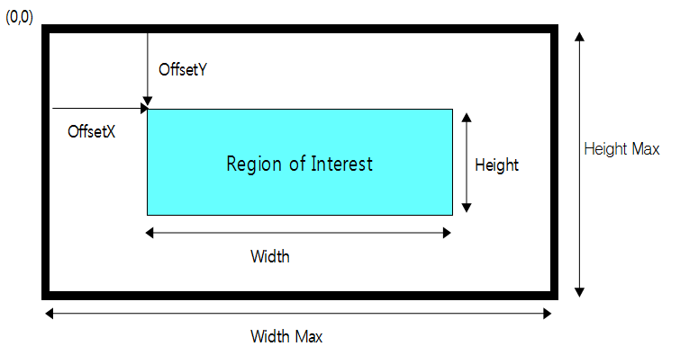
※ 참고 사항
1) ROI로 인해 변경된 Frame Rate은 ‘Resulting Frame Rate’ 파라미터를 통해 확인할 수 있습니다.
이미지 센서에서 수직 또는 수평 방향으로 1-Pixel씩 건너뛰며 읽어내는 기능 입니다. 이미지의 해상도는 절반으로 줄어드는 반면 Frame Rate는 증가합니다. Color 모델의 경우, 네 개의 컬러 채널을 모두 표현하기 위해 2-Pixel 단위로 건너뛰게 됩니다.
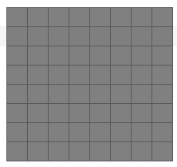 | 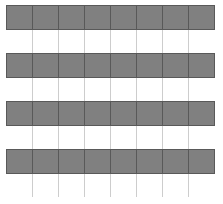 | 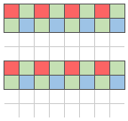 | 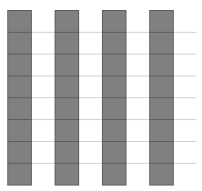 |
Decimation Hor. = 1x Decimation Vert. = 1x | Decimation Hor. = 1x Decimation Vert. = 2x | Decimation Hor. = 1x Decimation Vert. = 2x | Decimation Hor. = 2x Decimation Vert. = 1x |
※ 참고 사항
Decimation으로 인해 변경된 Frame Rate은 ‘Resulting Frame Rate’ 파라미터를 통해 확인할 수 있습니다.
이미지 센서에서 수직 또는 수평 방향으로 1-Pixel씩 픽셀 값을 누적해가며 읽어내는 기능 입니다. 이미지의 해상도는 절반으로 줄어드는 반면 Frame Rate는 증가하거나 밝기가 약 두 배가 됩니다. Color 모델의 경우, 네 개의 컬러 채널을 모두 표현하기 위해 2-Pixel 단위로 연산이 이뤄지게 됩니다.
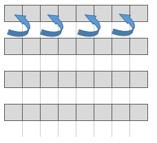 | 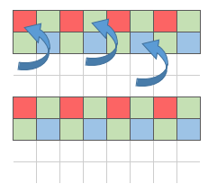 | 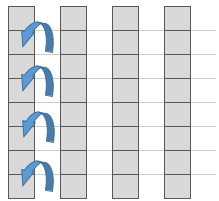 | |
Binning Hor. = 1x Binning Vert. = 1x | Binning Hor. = 1x Binning Vert. = 2x | Binning Hor. = 1x Binning Vert. = 2x | Binning Hor. = 2x Binning Vert. = 1x |
※ 참고 사항
Binning으로 인해 변경된 Frame Rate은 ‘Resulting Frame Rate’ 파라미터를 통해 확인할 수 있습니다.
영상의 좌/우 또는 상/하를 반전하여 출력하는 기능입니다. Color 모델의 경우 ‘Reverse Mode’에 따라 ‘Bayer Pixel Order’도 함께 바뀐 상태로 이미지가 출력 됩니다.
1) Reverse X 모드를 True로 설정시, 영상의 좌/우가 반전됩니다. (Bayer RG → Bayer GR)
2) Reverse Y 모드를 True로 설정시, 영상의 상/하가 반전됩니다. (Bayer RG → Bayer GB)
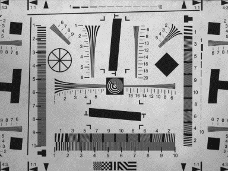 | 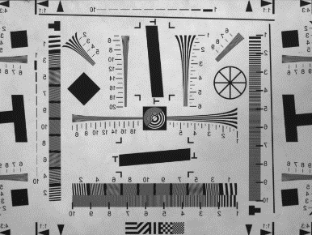 |
Reverse X = False, Reverse Y = False (Bayer RG) | Reverse X = True, Reverse Y = False (Bayer GR) |
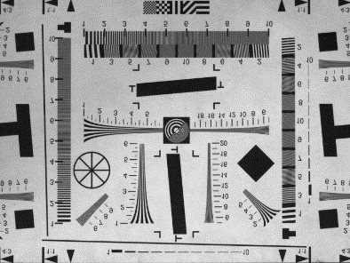 | 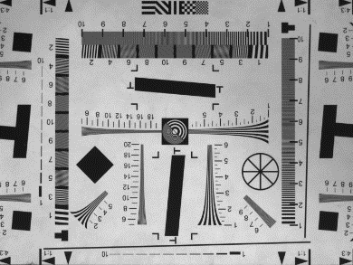 |
Reverse X = False, Reverse Y = True (Bayer GB) | Reverse X = True, Reverse Y = True (Bayer BG) |
※ 유의사항
1) 'Reverse Y' 선택 시 Defect Filter 사용이 제한되기 때문에 불량 화소가 나타날 수 있습니다. 이로 인해 노출된 불량화소는 ‘Defect Pixel Correction’ 카테고리에서 제거할 수 있습니다. (’Defect Pixel Correction’절 참고)
2) ROI와 Reverse가 동시에 사용될 경우, 반전된 이미지로부터 ROI 기능이 적용됩니다. 아래 그림과 같이Reverse가 활성화 될 경우 Image의 시작 좌표인 (0,0) Pixel의 위치가 반전됩니다. 이 때문에 Reverse 적용 이전과 동일한 영역을 촬상하기 위해선 Total Size - ROI Size만큼의 Image Offset이 필요합니다.
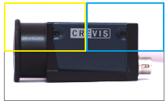 | 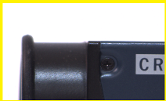 | 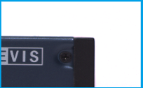 | |
Image Size : 4024 * 3036 Offset X : 0, Offset Y : 0 Reverse X : False, Reverse Y : False | Image Size : 2012 * 1518 Offset X : 0, Offset Y : 0 Reverse X : False, Reverse Y : False | Image Size : 2012 * 1518 Offset X : 0, Offset Y : 0 Reverse X : True, Reverse Y : False | Image Size : 2012 * 1518 Offset X : 2012, Offset Y : 0 Reverse X : True, Reverse Y : False |
영상의 Pixel Format을 변경할 수 있는 기능입니다. 각 Pixel Format별 이미지 데이터의 전송량에 차이가 있기 때문에 전송 속도 및 Bandwidth가 달라질 수 있습니다.
Mono8 | Mono10 |
8-bit image data into 8bits Descrpition : 8-bit monochrome unsigned Pixel Size : 1byte Pixel Value range : 0 to 255 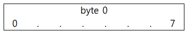 | 10-bit image data into 16-bits Description : 10-bit monochrome Pixel Size : 2byte Pixel Value range : 0 to 1023 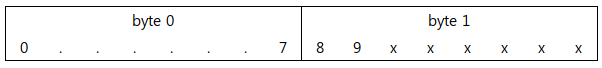 |
Mono12 | Mono12 |
12-bit image data into 16-bits Description : 12-bit monochrome unsigned Pixel Size : 2byte Pixel Value range : 0 to 4095 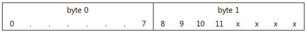 | 12-bit image data into 16-bits Description : 12-bit monochrome unsigned Pixel Size : 2byte Pixel Value range : 0 to 4095 |
RGB8 | RGB8 |
24-bit image data into 24-bits Description : 8-bit color component in one byte Pixel Size : 3 bytes for 1 pixel Pixel Value range : 0 to 255 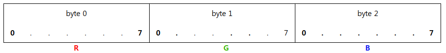 | 24-bit image data into 24-bits Description : 8-bit color component in one byte Pixel Size : 3 bytes for 1 pixel Pixel Value range : 0 to 255 |
BGR8 | BGR8 |
24-bit image data into 24-bits Description : 8-bit color component in one byte Pixel Size : 3 bytes for 1 pixel Pixel Value range : 0 to 255 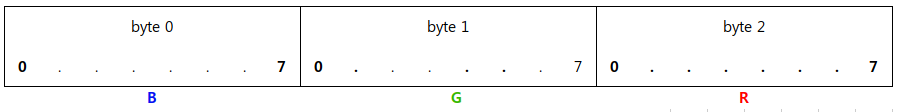 | 24-bit image data into 24-bits Description : 8-bit color component in one byte Pixel Size : 3 bytes for 1 pixel Pixel Value range : 0 to 255 |
이미지 프로세싱의 중간 단계에서 영상을 테스트 패턴으로 치환하여 전송합니다. Test Pattern 기능이 활성화 되더라도 ROI size 및 Trigger 입력 그리고 ‘Acquisition Frame Rate’등 이미지 취득과 관련된 기능들은 유효합니다. Test Pattern 이미지는 8bit grey level(0~255DN)로 생성 됩니다.
- Off : 센서 이미지
- On : Test Pattern
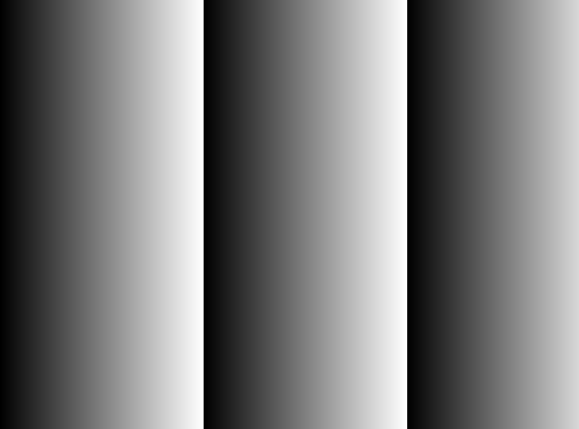 | |
Grey Horizontal Ramp | Grey Vertical Ramp |
* Pixel Format에 따라 Ramp의 size가 다를 수 있음.
※ 8bit 설정시 : Ramp Size = 256 Pixel
※ 10bit 설정시 : Ramp Size = 1024 Pixel
※ 12bit 설정시 : Ramp Size = 4096 Pixel
카메라에서 이미지를 획득하는 방식을 설정할 수 있는 기능입니다. 획득할 이미지 프레임 수를 정의할 수 있습니다.
Item | Setting Value | Description |
|---|---|---|
Acquisition Mode | Continuous, Single Frame, Multi Frame | Acquisition Start 커맨드로 부터 아래 조건 까지 영상을 취득합니다. - Continuous : Acquisition Stop 까지 연속으로 취득합니다. - Single Frame : 한 장의 이미지만을 취득합니다. - Multi Frame : 설정한 카운트 만큼만 영상을 취득합니다. |
Acquisition Start | Excute | 영상 획득 시작 Command |
Acquisition Stop | Excute | 영상 획득 종료 Command |
Acquisition Frame Count | 0 to 255 | Acquisition Start 시점부터 Burst로 전송할 이미지의 수. |
1) Single Frame
‘Acquisition Start’ 커맨드가 입력될 때 마다 한 장의 이미지를 촬상하고 전송합니다. 한 장의 이미지만 전송한 뒤 자동으로 Acquisition이 멈추기 때문에 별도의 ‘Acquisition Stop’ 커맨드는 필요하지 않습니다. 만일 ‘Trigger Mode’ 가 ‘On’ 일 경우에는 트리거에 의해 노광이 되고 전송됩니다. Trigger Mode가 ‘Off’ 일 경우에는 ‘Acquisition Start’ 커맨드 만으로 새로운 이미지 획득 및 전송이 가능합니다.
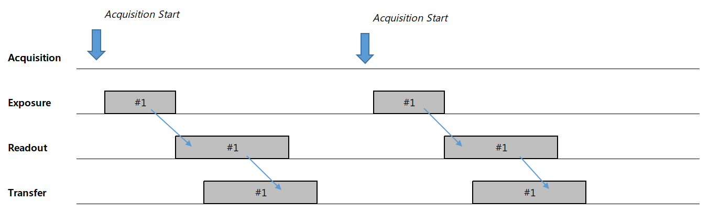
2) Multi Frame & Acquisition Frame Count
‘Acquisition Start’ 커맨드가 입력될 때마다 ‘Acquisition Frame Count’에 정의된 수 만큼 이미지를 촬상하고 전송합니다. 지정된 카운트 만큼 이미지를 전송한 뒤 자동으로 Acquisition이 멈추기 때문에 별도의 ‘Acquisition Stop’ 커맨드는 필요하지 않습니다. 하지만 Grab 도중 ‘Acquisition Stop’ 커맨드가 입력될 경우, 노광중인 프레임 까지 Readout 및 전송한 뒤 멈춥니다. 만일 ‘Trigger Mode’가 ‘On’ 일 경우에는 입력 트리거에 의해 노광되고 전송합니다.
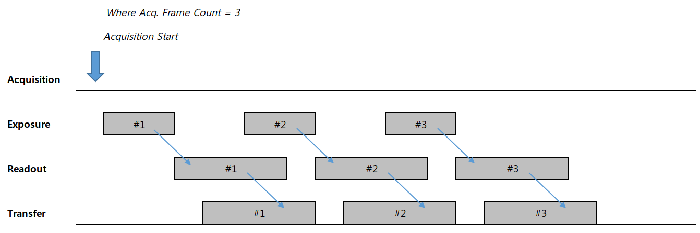
3) Continuous
‘Acquisition Start’ 커맨드가 입력된 시점으로 부터 ‘Acquisition Frame Rate’에 정의된 주기로 이미지를 촬상하고 전송합니다. Grab 중 ‘Acquisition Stop’ 커맨드가 입력될 경우, 현재 노출중인 이미지 까지는 Readout 하고 전송한 뒤 Acquisition을 멈추게 됩니다. 노광이 종료된 시점에 ‘Acquisition Stop’ 커맨드가 입력되면 진행중이던 Readout까지 끝난 뒤에 Acquisition이 종료됩니다. 만일 ‘Trigger Mode’ 가 ‘On’ 일 경우에는 트리거에 의해 노광이 되고 전송합니다.
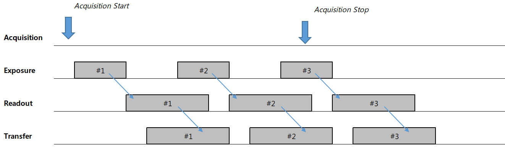
이미지 획득 및 출력 타이밍을 제어합니다. 영상 획득 방법으로는 크게 외부 동기(Trigger Mode = On)와 내부 동기(Trigger Mode = Off, Freerun Mode) 모드가 있으며 취득 지연 또는 전송 지연 등을 설정할 수 있습니다.
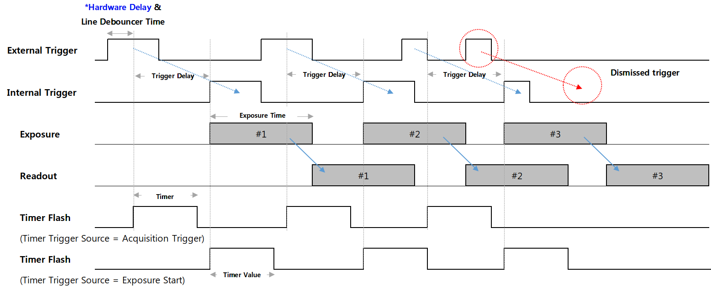 <Timing Diagram of Trigger Signals> |
* Hardware Delay
Trigger Rising edge | Trigger Falling edge | |
|---|---|---|
Opto-isolated Input | 10.2 us | 21.2 us |
GPI | 1.3 us | 0.01 us |
GPO | 0.2 us | 1.8 us |
※ Opto-isolated Input을 사용할 경우, 보다 짧은 지연을 위해 ‘Line Inverter’의 설정을 ‘False’(Trigger 신호의 Rising Edge를 기준으로 촬영)로 하는 것이 유리합니다. 더욱 빠른 성능이 필요할 경우, GPI 포트를 통한 입력을 권장합니다.
※ 위 측정된 지연시간은 3.3V Level의 트리거 신호 입력 기준이며, 보다 높은 신호 Level에서의 지연시간은 달라질 수 있습니다.
Item | Setting Value | Description |
|---|---|---|
Trigger Mode | Off, On | Off : 카메라가 Freerun모드로 동작합니다. Internal Trigger 신호가 생성됩니다. Internal Trigger의 주기는 ‘Acquisition Frame Rate’에 의해 결정됩니다. 만약 ‘Acquisition Frame Rate Enable’ 파라미터가 Off일 경우, 카메라는 현재 카메라 세팅에서 동작할 수 있는 최대 Frame rate로 동작합니다. On : 카메라가 Trigger Mode로 동작합니다. Trigger는 하드웨어 (Line 1) 또는 소프트웨어 트리거 커맨드를 통해 생성됩니다. |
Resulting Frame Rate | (Read Only) | Trigger Mode가 Off로 설정된 상태에서의 Frame Rate를 보여줍니다. 이미지 사이즈와 ‘Acquisition Frame Rate’, ‘Exposure Time’ 및 ‘Pixel Format’, ‘Decimation’ 등에 의해 결정됩니다. |
Trigger Sourece | Line1, Software | Trigger 입력으로 사용하고자 하는 Trigger의 Source를 선택합니다. 세부사항은 아래 Trigger Source 항목을 참조하세요. |
Trigger Delay | 0 to 57,844,677 (Unit : us) | 카메라가 입력받은 트리거로 부터 이미지 센서의 노광까지의 지연 시간을 정의합니다. 세팅 값 0은 Delay Off를 의미 합니다. 세부사항은 아래 Trigger Delay 항목을 참조하세요. |
Transfer Delay | 0 to 57,844,677 (Unit : Clock) | 센서로부터 읽어온 이미지를 전송 최종단에서 지연시킬 시간을 정의합니다. ‘Low Latency Mode Enable’이 ‘False’ 일 때에만 유효합니다. 세부사항은 아래 Transfer Delay 항목을 참조하세요. |
Trigger Activation | Rising Edge (Read Only) | 카메라 내부의 Trigger 신호 위상의 기준을 정의합니다. 입력 트리거의 위상을 변경하기 위해선 ‘Line Inverter’를 사용합니다. |
Line debouncer Time | 0 to 882.995 (Unit : us) | Line Debouncer Time을 조정합니다. 세부사항은 아래 Line Debouncer 항목을 참조하세요. |
‘Trigger Mode’는 이미지 센서의 노광 방식을 제어하는 기능입니다. ‘Trigger Mode’를 ‘Off’로 설정할 경우, 카메라는 Freerun Mode로 동작합니다. Freerun mode는 현재 설정 상태로 동작할 수 있는 최대 Frame Rate으로 Internal VD가 생성 됩니다. 이와 동시에 설정된 ‘Exposure Time’ 만큼 노광 신호가 생성되어 이미지 센서로 입력됩니다. 생성된 Exposure 신호에 의해 주기적인 노광이 이뤄지며 그에 따라 노출된 이미지를 읽어온 뒤 Host로 전송합니다.
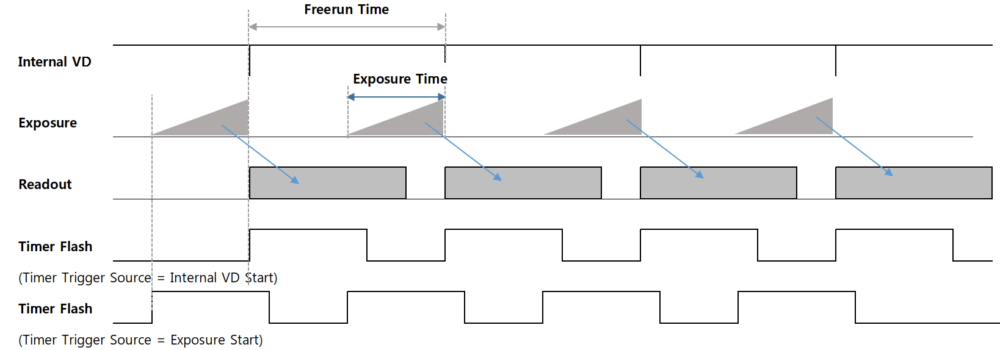 <Timing Diagram of Freerun Mode> |
반면 Trigger Mode를 ‘On’으로 설정할 경우, 카메라는 Trigger Mode로 동작하게 됩니다. Trigger mode는 외부로부터 입력받은 Trigger에 의해 노광 시작 시점 또는 노광 시간 등이 결정 됩니다. 노광이 완료된 후 부터는 Freerun mode와 동일하게 프레임을 읽어오고 전송합니다. 자세한 타이밍은 p.21<Timing Diagram of Trigger Signals> 그림을 참고해 주시기 바랍니다.
※ 유의사항
1) 제품의 최대 Frame Rate보다 빠른 주기의 Trigger 신호가 입력될 경우, 출력 이미지의 Frame Rate는 저하됩니다. (비정상 트리거 입력 판별은 ’Counter Control’ 참조) 따라서 카메라 사양 이내의 신호 규격을 준수하여 입력해 주시기 바랍니다.
2) 트리거 신호 Line에 노이즈가 유입될 경우, 카메라가 노이즈를 트리거 신호로 오인할 가능성이 있습니다. (노이즈 필터링 관련 ’Line Debouncer Time’ 기능 참조)
3) Acquisition 도중 Trigger Mode의 On → Off 상태 전환시 Over Trigger에 의한 불량 이미지가 Undelivered Frame 증가와 같은 형태로 발생될 수 있습니다. 따라서 Trigger 신호를 멈추고 Readout 시간 (약 1/Frame Rate 초) 만큼의 Time Sleep이 이루어진 상태에서의 모드 전환이 바람직합니다. 마찬가지로 Off → On 상태 전환시에도 같은 이유로의 불량 이미지가 발생될 수 있으므로, Readout 시간 만큼의 Time Sleep이 필요합니다.
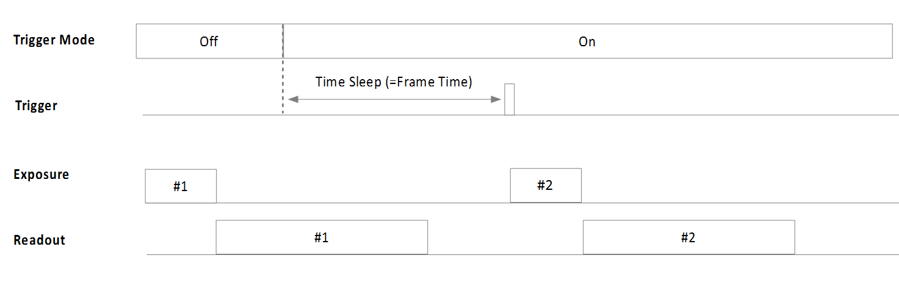 <Timing Diagram of Trigger Mode Changing> |
트리거 신호의 Source를 정의합니다. Trigger Mode가 On으로 설정되어 있을 때 적용됩니다.
- Line1 : 2번 핀(Trigger +)과 5번 핀(Trigger -)을 통해 트리거를 입력 받습니다. 트리거 신호의 전압 레벨 범위는 최소2.5V에서 최대 24V까지 입니다.
- Line2, Line3 : 3번 핀(GPIO1) 또는 4번 핀(GPIO2)을 통해 트리거를 입력 받습니다.
Software Trigger 함수를 통해 카메라 내부에 트리거를 생성합니다. 이 설정에서는 ‘Exposure Mode’가 ‘Timed’셔터 모드로만 지원됩니다.
※ 참고사항
‘Counter And Timer Control’ 카테고리의 ‘Counter Selector’를 ‘Line Trigger’ 로 설정하면 카메라로 입력한 총 유효 트리거 수가 ‘Counter Value’로 리턴 됩니다. 이 카운터는 Streaming Start에 의해 0으로 초기화 됩니다.
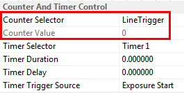
트리거 입력 시점으로 부터 ‘Trigger Delay’에 설정된 시간만큼 카메라 내부에서 트리거가 지연되어 동작하도록 설정하는 기능입니다. 만일 ‘Trigger Delay’가 0이 아닌 값이 설정되어 트리거 신호가 지연되는 도중 새로운 트리거 신호가 입력될 경우, 기존의 트리거 신호에 대한 지연은 지속 되며 새로운 트리거는 무시 됩니다. 즉, 트리거의 주기보다 지연시간이 더 클 경우, Trigger 누락에 의해 Frame Rate이 저하될 수 있습니다. 자세한 타이밍도는 P.21<Timing Diagram of Trigger Signals> 도해를 참고해 주시기 바랍니다.
카메라 내부에서 이미지 전처리(Pre-processing)까지 마친 영상을 전송하는 단계에서 이미지 Packet의 전송 시작 시점을 지연시키는 기능 입니다. 다수의 카메라 영상을 단일 Host에서 입력받는 경우 입력 타이밍을 조정하여 입력 시점을 분산할 수 있습니다. 파라미터의 입력 값은 Clock 단위 이므로, 시간으로 환산하기 위한 아래의 식을 참조하십시오.
※ 유의 사항
1) ‘Low-latency Mode Enable’ 파라미터가 ‘False’로 설정된 경우에 한해 설정 가능합니다.
2) 보다 자세한 타이밍은 ‘Low-Latency Mode’ 부분을 참고해 주시기 바랍니다.
카메라가 노광 방식을 선택하는 기능입니다. ‘Trigger Source’가 ‘Line1’으로 설정되어 있을 경우, ‘Timed’ 및 ‘Trigger Width’로 각각 설정이 가능합니다. 하지만 ‘Trigger Source’가 ‘Software’로 설정된 경우에는 ‘Timed’ 셔터로만 동작합니다. ‘Timed’ 셔터 방식은 ‘Exposure Time’에 설정된 시간 만큼만 노광이 이루어지게 됩니다. 트리거는 단지 노광의 시작 시점을 지정하는 역할을 합니다. 반면 ‘Trigger Width’ 셔터 방식은 트리거 신호의 Pulse 폭이 유효한 노광 시간이 됩니다.
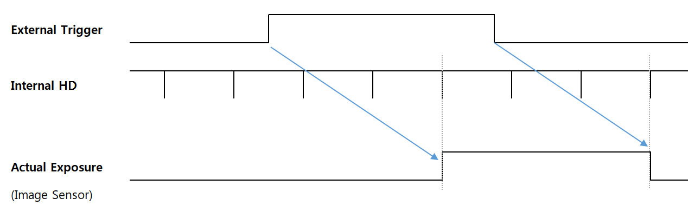 <Timing Diagram of Pulse Width Trigger> |
카메라의 노광시간을 설정합니다. 이 시간은 ‘Exposure Mode가 ‘Timed’로 설정되어 있는 경우에만 적용됩니다. Freerun Mode에서는 Exposure Time이 Frame 주기 보다 길어질 경우, Frame Rate이 감소하게 됩니다. 카메라 내부의 실제 노광 신호는 ‘HD’ 타이머에 의해 발생하게 됩니다. 이 ‘HD’ 타이머는 수평 방향의 Readout Size와 관련이 있기 때문에, 일반적으로 Image Width가 작을 수록 HD 신호의 주기도 함께 단축 됩니다. 또한 영상 전송 Bandwidth와 관련된 파라미터(ex. Pixel Format, Device Link Througput Limit 등)를 변경할 경우에도 HD 신호의 주기가 변경 됩니다.
※ 참고사항
‘Counter And Timer Control’ 카테고리의 ‘Counter Selector’를 ‘Exposure Start’ 또는 ‘Exposure End’ 로 설정하면 카메라에서 노광의 시작, 종료 카운트가 ‘Counter Value’로 리턴 됩니다. 이 카운터는 Streaming Start에 의해 0으로 초기화 됩니다.
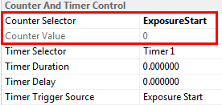
※ 유의사항
1) MU-AxxxM(K) 시리즈 카메라는 Exposure Time과 실제 노광 시간 사이에 오차가 존재합니다. 아래 표에 명기된 시간은 절대적인 시간으로써, 매 프레임마다 노광할 때 Exposure Time 외 추가로 노출되는 시간입니다.
Model | MU-A040M/K -523 | MU-A160M/K -226 | MU-A320M/K -118 | MU-A320M/K -55 | MU-A500M/K -35 | MU-A121M/K -23 |
|---|---|---|---|---|---|---|
Exposure Time Offset | 14.26us | 14.26us | 13.73us | 13.73us | 13.73us | 14.26us |
2) 트리거 신호가 카메라에 도달한 시점 으로부터 노광 시작(및 노광 종료) 시점이 지연될 수 있습니다. (Hardware 지연 및 ‘Line Debouncer Time’ 제외)
Delay Type | Delay Time |
|---|---|
Exposure Start Delay | 3HD |
Exposure End Delay | 3HD+Exposure Time Offset |
Model | MU-A040M/K -523 | MU-A160M/K -226 | MU-A320M/K -118 | MU-A320M/K -55 | MU-A500M/K -35 | MU-A121M/K -23 |
|---|---|---|---|---|---|---|
1HD | 3.259us | 3.919us | 5.778us | 11.393us | 13.414us | 14.02us |
※ 상기 1HD 시간은 최대 Image Size 조건에서 최대 Frame Rate을 출력할 경우를 기준으로 함.
Rolling Shutter 기반 이미지 센서를 채택한 두 제품군에 한해 ‘Sensor Shutter Mode’를 변경할 수 있습니다. 기본적으로 ‘Rolling shutter’ 모드를 지원 하지만, 피사체가 빠르게 움직일 경우 시간 차에 의한 이미지 왜곡이 나타날 수 있습니다. 반면 Overlap이 가능하기 때문에 제품의 최대 Frame Rate에 도달할 수 있습니다. 모든 Line이 균일한 노광시간을 갖는 장점이 있습니다. 이미지 각 라인을 동시에 Reset 하는 ‘Global Reset’ 모드를 사용하면 시간차에 의한 이미지 왜곡은 사라집니다. 하지만 Reset 직후부터 모든 라인은 노광 상태가 되기 때문에, 수직 방향으로 읽어나갈 수록 노광 시간이 길어지게 됩니다. 그리고 Overlapping 트리거가 지원되지 않기 때문에 Frame Rate은 약 절반 이하로 감소할 수 있습니다.
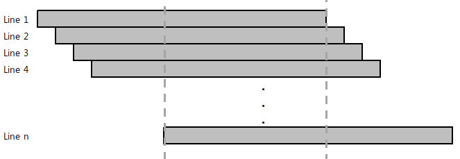 | |
Sensor Shutter Mode = Rolling | Sensor Shutter Mode = Global Reset |
※ 유의사항
‘Rolling’ 모드에서의 적절한 Exposure Flash 타이밍은 첫 번째 라인과 마지막 라인이 공통적으로 노광하는 사이 시간 입니다. 이 때에만 전체 이미지 라인에 균일한 조명이 조사될 수 있습니다.
‘Exposure Time’을 카메라가 자동으로 조정하여 원하는 밝기를 일정하게 유지해 주는 기능입니다. ‘ExposureMode’가 ‘Timed’로 설정되어 있을 때 설정할 수 있습니다. 그리고 ‘Auto Exposure Time Lower Limit’과 ‘Auto Exposure Time Upper Limit’의 사이 시간에서만 ‘Exposure Time’이 변경 됩니다.
파라미터 | 설정값 | 설명 |
|---|---|---|
Exposure Auto | Off Once Continuous | Off : Exposure time을 수동으로 설정합니다. Once : 한번만 노광시간을 조절하여 원하는 밝기 값으로 변경합니다. Continuous : 지속적으로 노광시간을 조절하여 원하는 밝기 값을 유지합니다. |
Auto Exposure Target | 0 to 255 (8-bit DN) | 사용자가 원하는 밝기값 설정 |
Auto Exposure Time Lower Limit | Unit : us | 가변 셔터 범위의 최소 값 |
Auto Exposure Time Upper Limit | Unit : us | 가변 셔터 범위의 최대 값 |
※ 유의사항
1) Exposure Time이 너무 짧을 경우 조명의 깜빡임 등에 의해 깜빡이는 영상이 출력될 수 있습니다.
2) 최대 밝기에 도달하기 위해 ‘Exposure Time’이 Frame Time 보다 길어질 경우 Frame Rate이
저하될 수 있습니다.
카메라 외부 I/O 신호를 설정할 수 있는 기능입니다. 각 I/O의 입/출력 방향은 고정되어 있으며, I/O 포트를 통한 신호의 논리적 사양을 변경할 수 있습니다.
Item | Setting Value | Description |
|---|---|---|
Line selector | Line1, Line2, Line3 | 세부 설정을 원하는 Line을 선택합니다. |
Line Mode | Input, Output | Line 1은 카메라의 Input Line으로 할당 되어 있습니다. Line 2, 3은 GPIO1, 2의 용도에 맞게 설정할 수 있습니다. |
Line Inverter | True / False | True : Line의 입/출력 위상을 반전 시킵니다. False : Line의 위상을 반전시키지 않습니다. |
Line Status | True / False | 선택된 Line의 현재 상태를 반환합니다. True는 Logical High를 의미하며, False는 Logical Low를 의미 합니다. |
Line Source | Exposure Active, Timer Active, User Output1, User Output2 | ‘Line Mode’가 ‘Output’으로 설정된 경우에만 사용가능합니다. Exposure Active : 노광시간 동안 활성화되는 Flash Signal이 출력 됩니다. Timer Active : ‘Counter And Timer Control’ 카테고리의 ‘TimerDuration’에 설정된 시간만큼 Flash Signal이 출력 됩니다. User Output1, User Output2 : ‘User Output 1’ 또는 ‘User Output 2’ 값이 출력 됩니다. |
User Output Value | True / False | ‘Line Source’가 User Output1으로 설정되었을 때의 출력 값을 설정합니다. |
<Line Block Diagram> |
카메라 외부 Trigger Line의 채터링 노이즈를 제거(Debouncing)하는 기능입니다. ‘Line Debouncer Time’에 설정된 시간 만큼 상태를 유지하는 신호에 대해서만 유효한 입력으로 받습니다. Line Debouncer Timer는 Trigger Line의 상태 변이를 체크하기 때문에 ‘Line Debouncer Timer’에 설정된 시간만큼 지연된 트리거를 입력받게 됩니다.
<Timing Diagram of Line Debouncer> |
Timer Control에서는 카메라 외부로 출력하는 스트로브 신호의 설정을 변경할 수 있습니다. ‘Trigger Mode’가 Off일 때 (Freerun Mode)에는 Timer Flash 신호의 생성 시점을 노광 시작 또는 ‘Internal VD Start’ 시점으로 선택할 수 있습니다. (<Timing Diagram of Freerun Mode> 도해 참고) VD가 초기화 되는 시점은 Shutter가 동작하는 시점보다 앞서기 때문에 조명과의 동기를 맞추기 위해 ‘Timer Delay’가 필요할 수 있습니다. 반면 ‘Trigger Mode’가 On 일 때에는 노광 시작 시점 또는 Trigger 신호 감지시점(상태변이 시점)을 Timer Flash 생성 위치로 선택할 수 있습니다. 외부 트리거에 의해 Timer가 생성될 경우, ‘Timer Delay’를 통해 실제 노광 구간과 동기를 맞출 수 있습니다. (<Timing Diagram of Trigger Signals> 도해 참고)
Item | Setting Value | Description |
|---|---|---|
Timer Duration | 0 to 57,844,677 (Unit : us) | Line2로 출력하는 Timer Flash 신호의 Pulse Width를 정의합니다. 설정값 0은 Off를 의미합니다. |
Timer Delay | 0 to 57,844,677 (Unit : us) | Line2로 출력하는 Timer Flash 신호의 발생 지연시간을 정의합니다. 설정값 0은 지연 없음을 의미합니다. |
Timer Trigger Source | Exposure Start, Acquisition Trigger, Internal VD Start PWC Trigger Start | Flash Timer가 발생하기 시작하는 시점을 선택합니다. Exposure Start : 노광이 시작되는 시점 Acquisition Trigger : 외부 트리거의 입력 시점 Internal VD Start : Freerun 모드에서의 Internal VD 리셋 시점 PWC Trigger Start : 카메라 내부에서 변환된 PWC Trigger 신호. |
4.5절의 ‘Exposure Control’에서 언급된 바와 같이 카메라에 입력된 Trigger 신호와 이미지 센서로의 실 노광까지는 일정한 시간 지연이 있습니다. 이 지연시간(Exposure Start Delay)은 ‘Timer Trigger Source’가 ‘Exposure Start’로 설정된 경우에는 음수 값의(Negative Value) ‘Timer Delay’ 도 사용할 수 있습니다. 음수 부호를 붙인 실수 형태의 값을 ‘Timer Delay’에 입력하면 센서로의 실 노광시점부터 최대 3HD 시간 만큼 타이머 신호의 발생 시점을 앞당길 수 있습니다. (<Timing Diagram of Timer Control> 도해 참고)
<Timing Diagram of Timer Control> |
카메라가 트리거를 입력 받고, 노광하며 이미지를 전송하는 일련의 과정을 단계별 카운터로 모니터링 할 수 있는 기능입니다. 또한 Frame 속도보다 빠른 주기의 트리거 입력 등 카메라 사양을 초과하는 신호 입력에 대한 확인도 가능합니다.
Item | Setting Value | Description | Description |
Counter Selector | LineTrigger Exposure Start Exposure End FrameEnd ExposureOver- Trigger ReadOutOver- Trigger | 외부로부터 입력되는 Trigger 신호에 대한 카메라 동작 여부를 모니터링 하는 기능입니다. LineTrigger : 총 입력된 External Trigger 및 Software Trigger 개수. Exposure Start : 실제 노광이 시작된 횟수. Exposure End : 실제 노광이 종료된 횟수. FrameEnd : Sensor로부터 Readout한 Frame의 수. ExposureOverTrigger : Exposure 도중 새로운 Trigger가 입력된 개수. <Timing Diagram of ‘Exposure Over Trigger’> 도해 참고. ReadOutOverTrigger : Readout도중 새로운 Trigger의 Exposure가 끝난 회수. <Timing Diagram of ‘Readout Over Trigger’> 도해 참고. 단, Readout Overtrigger는 Trigger Mask Enable = On 일 때만 카운트 됨.(초기 상태는 On으로 설정 되어 있음) | 외부로부터 입력되는 Trigger 신호에 대한 카메라 동작 여부를 모니터링 하는 기능입니다. LineTrigger : 총 입력된 External Trigger 및 Software Trigger 개수. Exposure Start : 실제 노광이 시작된 횟수. Exposure End : 실제 노광이 종료된 횟수. FrameEnd : Sensor로부터 Readout한 Frame의 수. ExposureOverTrigger : Exposure 도중 새로운 Trigger가 입력된 개수. <Timing Diagram of ‘Exposure Over Trigger’> 도해 참고. ReadOutOverTrigger : Readout도중 새로운 Trigger의 Exposure가 끝난 회수. <Timing Diagram of ‘Readout Over Trigger’> 도해 참고. 단, Readout Overtrigger는 Trigger Mask Enable = On 일 때만 카운트 됨.(초기 상태는 On으로 설정 되어 있음) |
Counter Value | (Read Only) | ‘Counter Value Reset’ 커맨드 입력 또는 Acquisition Start 시점에 모든 카운터 값들은 0으로 초기화 됩니다. | ‘Counter Value Reset’ 커맨드 입력 또는 Acquisition Start 시점에 모든 카운터 값들은 0으로 초기화 됩니다. |
<Timing Diagram of ‘Exposure Over Trigger’> 1) Exposure Mode = Timed일 경우 발생할 수 있는 유형입니다. 2) #3 Trigger 신호는 #2 Trigger 신호의 Timed Shutter 노출 중에 입력되었기 때문에 무시 됩니다. | <Timing Diagram of ‘Exposure Over Trigger’> 1) Exposure Mode = Timed일 경우 발생할 수 있는 유형입니다. 2) #3 Trigger 신호는 #2 Trigger 신호의 Timed Shutter 노출 중에 입력되었기 때문에 무시 됩니다. | <Timing Diagram of ‘Exposure Over Trigger’> 1) Exposure Mode = Timed일 경우 발생할 수 있는 유형입니다. 2) #3 Trigger 신호는 #2 Trigger 신호의 Timed Shutter 노출 중에 입력되었기 때문에 무시 됩니다. | |
<Timing Diagram of ‘Readout Over Trigger’> 1) Exposure Mode = Timed 및 Trigger Width일 경우에 나타날 수 있는 유형입니다. 2) #3 Trigger 신호는 카메라의 최소 주기보다 빠른 주기로 입력 되었습니다. 따라서 카메라는 #3 트리거를 노이즈 또는 불량 트리거로 간주하여 #2의 이미지를 멈춤없이 전송합니다. | <Timing Diagram of ‘Readout Over Trigger’> 1) Exposure Mode = Timed 및 Trigger Width일 경우에 나타날 수 있는 유형입니다. 2) #3 Trigger 신호는 카메라의 최소 주기보다 빠른 주기로 입력 되었습니다. 따라서 카메라는 #3 트리거를 노이즈 또는 불량 트리거로 간주하여 #2의 이미지를 멈춤없이 전송합니다. | <Timing Diagram of ‘Readout Over Trigger’> 1) Exposure Mode = Timed 및 Trigger Width일 경우에 나타날 수 있는 유형입니다. 2) #3 Trigger 신호는 카메라의 최소 주기보다 빠른 주기로 입력 되었습니다. 따라서 카메라는 #3 트리거를 노이즈 또는 불량 트리거로 간주하여 #2의 이미지를 멈춤없이 전송합니다. |
Chunk 데이터는 메타 데이터를 전송하기 위해 데이터 블록 내에 그룹화 할 수 있는 태그가 지정된 데이터 블록입니다. 각 Chunk는 청크 데이터와 Trailing tag로 구성되며, 태그에는 ‘고유 청크 식별자(Unique Chunk Identifier, CID)’와 ‘Chunk 데이터 길이’가 포함됩니다. 이 Chunk Data는 USB3Vision Standard 1.1에 의거하여 전송됩니다.
Item | Setting Value | Description |
|---|---|---|
Chunk Mode Active | True / False | Chunk Data 전송 여부를 결정합니다. ‘True’가 설정된 경우, Chunk Selector에서 지정한 파라미터가 매 Frame마다 Chunk로 전송됩니다. |
Chunk Selector | Frame Counter, Time Stamp, Gain, Exposure Time, Counter Value, Device Temperature, Line Status All | Frame Counter : 전송하는 현재 이미지의 고유 번호입니다. 첫 장 이미지의 카운터는 0이며, 각 프레임 전송 후 1씩 증가합니다. Time Stamp : USB3Vision 표준에 의해 지정된 Timer로써, 1 tick (10ns) 단위로 증가합니다. Gain : 전송하는 현재 이미지의 각종 Gain값을 일시에 전송합니다. Exposure Time : 전송하는 현재 이미지의 Exposure Time을 전송합니다. Counter Value : 이미지 전송시점의 각종 Counter 값을 리턴합니다. Device Temperature : 이미지 전송시점의 Device 온도 값을 리턴합니다. Line Status All : 이미지 전송시점의 모든 Line 상태를 나타냅니다. |
Chunk Enable | True / False | Chunk Selector에서 지정한 Chunk에 대해 Chunk Data로써의 참여를 결정하는 기능입니다. Chunk Mode Active가 ‘True’로 설정되어 있을 경우, Chunk Enable에 ‘True’로 지정된 Chunk만 전송합니다. |
Chunk 데이터는 이미지의 마지막 Payload 패킷에 함께 전송됩니다. 각 Chunk의 고유 청크 식별자 (Unique Chunk Identifier, CID)와 데이터의 size정보는 아래 표를 참고해 주시기 바랍니다.
Chunk Selector | Chunk Length | Chunk Data | CID |
|---|---|---|---|
Image | Payload Size | Image Data | 0x617D18DB |
Frame Counter | 8Byte | Frame Counter : Offset 0, length 4Byte Reserved : Offset 4Byte, length 4Byte | 0x4652414D |
Time Stamp | 8Byte | Time Stamp : Offset 0, length 4Byte Reserved : Offset 4Byte, length 4Byte | 0x54494D45 |
Gain | 16Byte | Digital Gain : Offset 0, length 2Byte Analog Gain : Offset 2Byte, length 2Byte Gain Red : Offset 4Byte, length 2Byte Gain Green : Offset 6Byte, length 2Byte Gain Blue : Offset 8Byte, length 2Byte Reserved : Offset 10Byte, length 6Byte | 0x4741494E |
Exposure Time | 8Byte | Exposure Time : Offset 0, length 4Byte Reserved : Offset 4Byte, length 4Byte | 0x4558504F |
Counter Value | 24Byte | External Trigger Start : Offset 0, length 4Byte Exposure Start : Offset 4Byte, length 4Byte Exposure End : Offset 8Byte, length 4Byte Frame End : Offset 12Byte, length 4Byte Exposure Start Missed : Offset 16Byte, length 4Byte Exposure End Missed : Offset 20Byte, length 4Byte | 0x4F544845 |
Device Temperature | 8Byte | Device1 Temperature : Offset 0, length 4Byte Reserved : Offset 4Byte, length 4Byte | 0x54454D50 |
Line Status All | 8Byte | Line 1 : Offset 0, bit[0] Line 2 : Offset 0, bit[1] Line 3 : Offset 0, bit[2] Line 4 : Offset 0, bit[3] Line 5 : Offset 0, bit[4] Line 6 : Offset 0, bit[5] Line 7 : Offset 0, bit[6] Line 8 : Offset 0, bit[7] Reserved : Offset 1Byte, length 7Byte | 0x4C494E45 |
Event 알림은 카메라에서 특정 Event 상황 마다 Host로 Event Packet을 전송하는 기능입니다. 이미지 전송채널과는 다른 채널로 Event Packet을 전송합니다. 카메라에서의 이벤트 발생은 실시간이지만, Host 사정에 의해 패킷 전송 지연이 발생할 경우 Event Packet의 실제 수신 시점 또한 다소 지연되거나 누락될 가능성이 있습니다. 카메라 내부에선 최대 128개의 Event를 적재할 수 있지만 그 이상 전송이 지연된다면 새로이 발생되는 이벤트는 누락되게 됩니다.
Item | Setting Value | Event ID | Description |
|---|---|---|---|
Event Selector | Exposure End, Over Trigger Start Missed Over Trigger End Missed Trigger Start Device Temperature Warning Device Temperature Critical | 0x0004 0x5005 0x5006 0x5007 0x501E 0x501F | Exposure End : 노광이 종료된 시점에 Event가 발생합니다. Over Trigger Start Missed : 노광중에 Over Trigger에 의해 새로운 트리거 입력시 Event가 발생합니다. Over Trigger End Missed : Over Trigger에 의한 이미지 Readout 도중 새로운 Trigger에 의해 노광이 끝날 경우, Event가 발생합니다. Trigger Start : 외부 Trigger 신호 또는 Software Trigger가 카메라에 인식되는 시점에 Event가 발생합니다. Device Temperature Warning : 카메라의 온도가 를 초과할 경우 1회에 한해 Event가 발생합니다. Device Temperature Critical : 카메라의 온도가 를 초과할 경우 1회에 한해 Event가 발생합니다. |
Event Notification | Off, On | 각 Selector의 Event에 대해 알림을 활성화 또는 비활성화 합니다. |
영상 신호의 Analog 및 Digital 특성을 변경할 수 있습니다. 주로 이미지 화소에 대한 속성을 변경할 수 있는 기능이 나열 되어 있습니다.
<Block Diagram of Analog Control> |
Item | Setting Value | Description |
|---|---|---|
Gain Selector | All, DigitalAll | 설정할 Gain을 선택합니다. 두 개의 각 Gain은 서로 독립적인 Gain 으로써, 동시에 각각 다른 값을 설정할 수 있습니다. - All : Analog Gain - Digital All : Digital Gain |
Gain Raw | All : Analog Gain - Global Shutter : 0 to 276 - Rolling Model : 0 to 270 DigitalAll : Digital Gain (공통) 0 to 8191 | 원하는 Gain을 Raw 값으로 적용할 수 있습니다. |
Gain Abs | All : Analog Gain - Global Shutter : 1 to 24x - Rolling Model : 1 to 22.39x DigitalAll : Digital Gain (공통) 1 to 8.99x | 원하는 Gain값을 배율로 적용할 수 있습니다. 원본 이미지의 밝기를 1 배로 규정하여 상대적인 배율을 입력할 수 있습니다. ※ 참고 : dB 환산식 Gain_dB = 20 * log(GainAbs) |
Gain Auto | Off, Once, Continuous | AGC(Automatic gain control) 기능을 설정할 수 있습니다. 이 때 Target 밝기 값은 ‘Auto Exposure Target’에 정의 됩니다. Off : Gain 을 수동으로 설정합니다. Once : 한번만 Gain값을 조절하여 원하는 밝기 값으로 변경합니다. Continuous : 연속적으로 Gain값을 조절하여 원하는 밝기값을 항시 유지합니다. |
Auto Gain Lower Limit | Unit : dB | 가변 Gain 범위의 최소 값 |
Auto Gain Upper Limit | Unit : dB | 가변 Gain 범위의 최대 값 |
Black Level Selector | All, DigitalAll | 설정할 Black Level 을 선택합니다. 두 개의 각 BlackLevel은 서로 독립적인 Offset 으로써, 동시에 다른 값을 설정할 수 있습니다. - All : Analog Offset - Digital All : Digital Offset |
Black Level Raw | All : Analog Offset -Global Shutter : 0 to 255 -Rolling Model : 0 to 255 DigitalAll : Digital Offset (공통) 0 to 1023 | Analog / Digital Black Level 값을 변경 합니다. 이미지 신호의 DC Offset을 조정할 수 있습니다. |
Pattern Noise Removal | Execute | 패턴 형태의 노이즈를 제거 합니다. (MU-A121R/L-31 및 MU-A201R/L-18 모델에 한함) |
Noise Reduction Filter | False, True | Noise Reduction 기능을 활성화 합니다. Sharpness가 다소 감소할 수 있습니다. |
Gain은 Frame Rate의 저하 없이 영상의 감도를 변경할 수 있는 반면, 이미지 노이즈 또한 함께 증가할 수 있습니다. 카메라의 Gain은 Analog Gain 및 Digital Gain으로 각각 구성되어 있으며, ‘Gain Selector’를 통해 선택할 수 있습니다. Gain Auto는Auto Gain Control 알고리듬에 의해 Target 밝기로 Gain 값을 자동 조정하는 기능입니다. Gain Auto가 구동되는 동안 변경되는 Gain 값의 범위는 ‘Auto Gain Lower Limit’과 ‘Auto Gain Upper Limit’에 의해 제한됩니다.
※ 유의사항
‘Gain Auto’를 ‘Exposure Auto’ 기능과 일시에 사용할 경우 밝기 변화에 대한 우선 순위
‘Black Level’은 카메라의 감도 중 Offset을 설정할 수 있는 기능입니다. ‘Black Level’은 Gain과 마찬가지로 Analog Black Level과 Digital Black Level로 구성되어 있으며, ‘Black Level Selector’를 통해 선택할 수 있습니다.
Gamma Correction을 조정하기 위한 기능입니다. 카메라 영상의 명암 대비를 보정할 수 있습니다.
<ITE ‘GrayScale ChartⅡ (y=0.45)’>
※ 유의사항
- Gamma Correction 기능은 LUT와 동시에 사용할 수 없습니다. LUT와 Gamma를 일시에 활성화 할 경우, 먼저 활성화 시킨 기능은 자동으로 Disable 상태가 됩니다.
이미지에 모자이크 패턴과 유사한 노이즈가 나타날 경우 개선할 수 있는 기능입니다. 사용자의 환경(조명, 렌즈 등)에 대한 set-up이 완료된 이후 모자이크 패턴 또는 특정 컬러 채널간의 감도 불균형 현상이 나타날 경우 자체 보정할 수 있습니다. ‘Pattern Noise Removal’ 커맨드를 통해 즉시 보정이 가능합니다.
※ 유의사항
1) ‘Pattern Noise Removal’을 수행하기 위해 이미지를 Grab 해야 합니다.
2) 커맨드 입력을 통해 영상을 보정한 뒤, ‘Userset Save’ 커맨드를 통해 카메라에 보정 값을 저장해야
합니다.
노이즈 필터를 통해 영상 노이즈를 감쇄할 수 있는 기능입니다. 활성화시 다음 Frame부터 반영되며 영상의 Sharpness가 다소 저하될 수 있습니다.
Noise Reduction Filter = False | Noise Reduction Filter = True |
컬러 카메라의 색 균형을 보정하기 위한 기능입니다. 광원에 대한 컬러 채널간 감도 균형을 이루기 위해 보정합니다. 광원의 색온도가 달라질 경우 새로 보정을 해야합니다.
Item | Setting Value | Description |
|---|---|---|
Balance Ratio Selector | Red, Green, Blue | Color Gain을 조정하기 위한 색을 선택합니다. |
Balance Ratio | 0 to 7.9 | 선택한 색상의 Gain값을 조정합니다. 단위는 배율 입니다. (기본값 : 1x) |
Balance White Auto | Off, once, Continuous | Once : 1 회에 한해 컬러 Gain을 조정하여 화이트 밸런스를 맞춰줍니다. Continuous : 지속적으로 컬러 Gain을 조정하여 화이트 밸런스를 유지하여 줍니다. |
※ 유의사항
1) 특정한 밝기 범위를 벗어난 Pixel은 노이즈로 판단합니다. 또한 특정 Color에 심하게 치우친 경우에도 Auto White Balance 연산에서 제외 됩니다. 자세한 조건은 아래 기준을 참고하십시오.
2) 색 보정 이후 ‘Userset Save’ Command를 통해 보정값을 카메라의 PROM에 저장해야 합니다.
사용자가 설정한 파라미터의 값을 저장 또는 불러오기 위한 기능입니다. Grab 도중에는 반드시변경되지 않아야 하는 Parameter들이 있기 때문에 Acquisition Stop 상태에서 Userset Load 수행하는 것을 권장합니다.
Item | Setting value | Description |
|---|---|---|
User Set Selector | Default Userset1 Userset2 Userset3 | Default : 카메라에 기본으로 저장되어 있는 설정값입니다. 사용자가 저장할 수 없습니다. Userset1/2/3 : 사용자가 임의로 저장/불러오기가 가능합니다. 전원 Off/On 시에도 저장한 설정으로 유지됩니다. |
User Set Load | Execute | 선택된 Userset Selector 항목의 설정을 불러옵니다. |
User Set Save | Execute | 선택된 Userset Selector 항목에 설정을 저장합니다. |
LUT(Look Up Table) 기능은 Digital변환 된 Pixel 값을 테이블에 입력값 대비 출력값으로 1:1매칭시켜 변환하는 기능 입니다. Table의 각 Index(Input Image)에 정의한 LUT Value(Output Image)로 Pixel 값이 치환 됩니다. 컬러 모델의 경우, 휘도 성분(Luminance)을 LUT메모리에 적재 합니다.
Item | Setting value | Description |
|---|---|---|
LUT Enable | Disable, Enable | LUT 기능 활성화 여부를 결정합니다. |
LUT Index | 0 to 4095 | LUT의 Index값을 조정합니다. Table의 입력 Pixel값 입니다. |
LUT Value | 0 to 4095 | 해당되는 LUT Index의 값을 조정합니다. Table의 출력 Pixel 값 입니다. |
Ex) y=2x 형태로 값을 table을 사용할 경우 저조도 Pixel은 감도 향상 효과를 볼 수 있는 반면, 고조도 Pixel은 포화 상태가 되므로 Dynamic Range에 손실이 발생함.
Index | 0 | 1 | 2 | 3 | 4 | 5 | … | 1024 | … | 2047 | 2048 | … |
|---|---|---|---|---|---|---|---|---|---|---|---|---|
Value | 0 | 2 | 4 | 6 | 8 | 0xA | … | 0X800 | … | 0xFFE | 0xFFF | 0xFFF |
※ 유의사항
- LUT 기능은 Gamma Control 과 동시에 사용할 수 없습니다. LUT와 Gamma를 일시에 활성화 할 경우, 먼저 활성화 시킨 기능은 자동으로 Disable 상태가 됩니다.
카메라의 Defect Pixel을 관리할 수 있는 기능입니다. 제품의 공장 출하시 불량 화소에 대한 보정이 이루어 집니다. 하지만 사용자가 불량 화소라고 생각하는 Pixel을 추가로 정의하여 보정할 수 있습니다. 각 카메라당 최대 128개의 불량 화소를 Flash PROM에 저장할 수 있습니다.
Item | Setting Value | Description |
|---|---|---|
Defect Filter Enable | False, True | Defect Pixel 보정 여부를 선택 합니다. |
Defect Filter Test Mode Select | Off, Mark White, Mark Black, Mark White with Black Background | 보정된 Defect Pixel을 영상에 나타내는 옵션 입니다. |
Defect Pixel Replacement Count | 1 to 256 | 카메라당 보정할 불량화소의 개수 입니다. |
Defect Pixel Index | 0 to 255 | 보정 할 Defect Pixel의 Index 입니다. |
Defect Pixel X Coordinate | 0 to WidthMax - 1 | 보정 할 Pixel의 X축 좌표 값을 입력합니다. 이미지 Pixel의 좌표는 0 부터 시작합니다. |
Defect Pixel Y Coordinate | 0 to HeightMax - 1 | 보정 할 Pixel의 Y축 좌표 값을 입력합니다. 이미지 Pixel의 좌표는 0부터 시작합니다. |
Defect Pixel X Replacement | Excute | 입력한 보정 값을 카메라에 즉시 적용 합니다. |
※ 유의사항
- 보정 이후 반드시 ‘Userset Save’ 커맨드를 입력해야 카메라에 저장해야 합니다.
Ex) 공장 출하시 20개의 Defect Pixel이 보정된 상태에서, 사용자가 두 개의 Pixel을 추가 정의할 경우
Defect Pixel Replacement Count | Defect Pixel Index | X Coordinate | Y Coordinate |
|---|---|---|---|
… | … | … | … |
19th | 18 | … | … |
20th | 19 | … | … |
21th | 20 | 156 | 1131 |
22th | 21 | 208 | 611 |
FPGA에서 전처리(Pre-processing)된 영상 데이터를 약 512MB의 Image Buffer(Frame Buffer)에 적재하고 읽어오는 방식을 선택할 수 있습니다. 초기값은 ‘Low-latency Mode Enable’이 ‘True’입니다. 이는 이미지가 Packet Size만큼 Buffer에 입력되면 즉시 전송하는 방식 입니다. 반면 ‘Low-latency Mode Enable’이 ‘False’로 설정된 경우에는 ‘Full-Block Mode’가 되며 이미지 Frame이 모두 Buffering 되어야만 전송합니다. 두 모드는 촬상 및 Readout, 전처리까지의 소요 시간 및 타이밍은 동일 하지만, Host로의 전송을 시작하는 타이밍은 서로 다릅니다. 즉 트리거 입력부터 Host 수신까지의 총 소요시간에 차이가 있습니다.
Low-Latency Mode | Full-Block Mode | |
|---|---|---|
Low-Latency_Mode_Enable Parameter | True | False |
전송 개시 시점 | Packet Size만큼 적재시 | Frame 모두 적재시 |
Transfer Delay 사용 가능 여부 | 사용 불가 | 사용 가능 |
<Timing Diagram of ‘Low-Latency Mode’> |
<Timing Diagram of ‘Full-Block Mode’> |
Host가 다수의 카메라로부터 영상을 입력받아야 하는 경우, 가장 좋은 방법은 각 Port마다 전용 Chipset이 부착된 Multi-port 호스트카드를 사용하는 것 입니다. 그렇지 못한 경우에는 각 카메라의 Packet 전송을 분산시켜 Host(수신부)의 최대 Bandwidth를 초과하지 않도록 운용해야 합니다. 예컨대 ‘Full-Block Mode’로 각기 다른 ‘Transfer Delay’를 적용하면 이미지 전송 시점을 분산시킬 수 있습니다. 이 경우 Host는 순차별로 이미지를 수신하게 됩니다.
※ 유의사항
1) ‘Low-latency Mode Enable’ 파라미터는 변경 즉시 적용됩니다. 단, Acquisition Stop시에 변경해야 합니다.
2) ‘Transfer Delay’ 기능은 ‘Low-latency Mode Enable’ 이 ‘False’ 일 때에만 설정 가능합니다.
3) Host PC에서 영상처리 등으로 인한 CPU 자원 소모가 클 경우, 카메라의 전송에도 영향을 줄 수 있습니다.
Color Transformation은 각각의 R, G, B 채널별로 Gain과 Offset을 적용할 수 있는 Matrix 입니다.
Item | Setting Value | Description |
|---|---|---|
Color Transformation Enable | True / False | Color Transfermation 기능을 활성화 합니다. . |
Color Trasformation Value Selector | Gain 00, Gain 01, Gain 02, Gain 10, Gain 11, Gain 12, Gain 20, Gain 21, Gain 22, Offset0, 1, 2 | Gain 00 : Color Matrix상의 (0,0) 의 값을 의미합니다. Gain 01 : Color Matrix상의 (0,1) 의 값을 의미합니다. Gain 02 : Color Matrix상의 (0,2) 의 값을 의미합니다. Gain 10 : Color Matrix상의 (1,0) 의 값을 의미합니다. Gain 11 : Color Matrix상의 (1,1) 의 값을 의미합니다. Gain 12 : Color Matrix상의 (1,2) 의 값을 의미합니다. Gain 20 : Color Matrix상의 (2,0) 의 값을 의미합니다. Gain 21 : Color Matrix상의 (2,1) 의 값을 의미합니다. Gain 22 : Color Matrix상의 (2,2) 의 값을 의미합니다. Offset0,1,2 : Color Matrix 종단의 Offset 값을 의미합니다. |
Color Transformation Value | 색 변환 행렬 내에서 선택된 Gain 또는 Offset 값 입니다. |
이미지 센서에서 출력되는 Pixel값이 실물과 차이를 보일 때, 색 보정을 위해 사용하는 기능입니다. R, G, B 각 채널별로 감도가 부족한 부분은 곱하거나 더해주고, 감도가 넘치는 부분은 나누거나 빼줄 수 있습니다. 또한 일부 컬러 표준에 부합하는 Pre-defined 매트릭스 값을 적용하여 재현할 수도 있습니다.
MU-AxxxM(K) 시리즈 제품의 온도 상태를 ‘Device Temperature State’ 파라미터에 세 단계로 나누어 제공합니다. ‘Temperature Update Feature’ 커맨드를 누르면 즉시 ‘Device Temperature State’값이 리턴됩니다.
‘Normal’은 안정적인 온도임을 의미합니다. 카메라의 모든 소자들이 무리 없이 동작하는 상태입니다. ‘Warning’은 제품의 발열이 다소 높은 상황임을 나타냅니다. 기준 온도인 를 초과하는 순간 ‘Device Temperature Warning’ Event를 발생시켜 Host로 ‘Device Temperature State’ 변화를 알려줍니다.(Event 설정이 되어있는 경우. 4.10절 Event Control 참고) 영상 획득은 가능하지만 방열을 통해 카메라의 온도를 내려줄 필요가 있는 상황입니다. 계속하여 제품 온도가 증가하는 경우, 두 번째 문턱온도인 에 도달하는 순간 ‘Device Temperature Critical’ Event가 발생됩니다.(Event 설정이 되어있는 경우. 4.10절 Event Control 참고) 이 때에는 제품의 자체적인 보호를 위한 방열동작이 스스로 일어나게 됩니다. 카메라가 Acquisition Enable 상태라면 임의로 이미지 센서의 Readout을 중단하고, 이와 동시에 좌측으로 움직이는Test Pattern 이미지를 트리거 비동기 모드로 출력합니다.
Image Data of Device Temperature Critical State 이러한 카메라의 자체 방열 동작 또는 외부 방열 조치로 인해 제품의 온도가 하강하게 될 경우, ‘Device Temperature State’도 갱신됩니다. ‘Critical’ 상태의 기준온도인 보다 4℃이상 낮아지게 되면 ‘Warning’ 상태로 바뀌게 됩니다. 이 경우에는 Test Pattern으로 대치되었던 영상 데이터가 이미지 센서 영상으로 자동 복원됩니다. 또한 이 때에는 냉각중인 상태라고 판단하므로 ‘Device Temperature Warning’ Event를 발생시키지는 않습니다. 마찬가지로 ‘Warning’ 상태의 기준온도인 보다 4℃ 이상 낮아지게 되면 ‘Normal’ 상태로 복귀합니다.
Available Model | Device Temperature State | Threshold Temperature |
|---|---|---|
MU-A040M(K)-523 MU-A160M(K)-226 MU-A320M(K)-118 MU-A320M(K)-55 MU-A500M(K)-35 MU-A121M(K)-23 | Warning State () | 60℃ |
MU-A040M(K)-523 MU-A160M(K)-226 MU-A320M(K)-118 MU-A320M(K)-55 MU-A500M(K)-35 MU-A121M(K)-23 | Critical State () | 75℃ |
Mono Camera |
Color Camera |
Camera Parameter List
Category | Feature Name | Type | Access Mode | Description |
|---|---|---|---|---|
Device Control | DeviceScanType | Enumeration | RO | Scan type of the sensor. |
Device Control | DeviceVendorName | StringReg | RO | Name of the manufacturer of the device. |
Device Control | DeviceModelName | StringReg | RO | Model of the device. |
Device Control | DeviceManufacturerInfo | StringReg | RO | Manufacturer information about the device. |
Device Control | DeviceVersion | StringReg | RO | Version of the device. |
Device Control | DeviceID | StringReg | RO | User-programmable device identifier. |
Device Control | DeviceUserID | StringReg | RW | User-programmable device identifier. |
Device Control | DeviceLinkThroughputLimit | Integer | RW | Limits the maximum bandwidth of the data that will be streamed out By the device on the selected Link.(Unit : Byte per second) |
Device Control | DeviceFirmwareVersion | StringReg | RO | Device Firmware Version |
Device Control | DeviceTemperatureSelector | Enumeration | RW | Selects the location within the device, where the temperature Will be measured. |
Device Control | DeviceTemperature | Float | RO | Device temperature in degrees Celsius (C). |
Device Control | TemperatureUpdateFeature | Command | WO | Device Temperature Update Feature. |
Device Control | Device Temperature State | Enumeration | RO | Represents Device Temperature State. |
Device Control | U3VDeviceCapability | Integer | RO | Describes Device Capability. |
Device Control | UserNameAvailable | Boolean | RO | Set if User Defined Name available. |
Device Control | AccessPrivilegeAvailable | Boolean | RO | Set if Heartbeat/Access Privilege is available. |
Device Control | MessageChannelSupported | Boolean | RO | Set if the device supports a Message Channel. |
Device Control | TimestampSupported | Boolean | RO | Set if the device supports a timestamp register. |
Device Control | StringEncoding | Integer | RO | String Encoding of the BRM. |
Device Control | FamilyRegisterAvailable | Boolean | RO | Set if the device supports the Family Name register. |
Device Control | SBRMSupported | Boolean | RO | Set if the device supports a SBRM. |
Device Control | EndianessRegistersSupported | Boolean | RO | Set if the device supports the Protocol Endianess and Implementation Endianess registers. |
Device Control | WrittenLengthFieldSupported | Boolean | RO | Set to 1 if the device sends the length_written field in the SCD section of the WriteMemAck command. |
Device Control | DeviceStatusInfo | Integer | RO | Describes Device Status Infomation. |
Device Control | DeviceReset | Command | WO | Resets the device to its power up state. |
Device Control | DeviceSleepMode | Enumeration | RW | Controls Sleep Activation. When 'Soft Sleep' activated, the sensors are reset. 'Deep sleep' resets both sensors and the FPGA. When returning to Normal Mode('Disable'), It take several seconds. |
ImageFormat Control | SensorWidth | IntReg | RO | Effective width of the sensor in pixels. |
ImageFormat Control | SensorHeight | IntReg | RO | Effective height of the sensor in pixels. |
ImageFormat Control | WidthMax | IntReg | RO | Maximum width (in pixels) of the image. The dimension is calculated after horizontal binning, decimation or any other function changing The horizontal dimension of the image. |
ImageFormat Control | HeightMax | IntReg | RO | Maximum height (in pixels) of the image. This dimension is calculated after vertical binning, decimation or any other function changing The vertical dimension of the image. |
ImageFormat Control | Width | Integer | RW | Width of the Image provided by the device (in pixels). |
ImageFormat Control | Height | Integer | RW | Height of the image provided by the device(in pixels). |
ImageFormat Control | OffsetX | Integer | RW | This value sets the X offset (left offset) for the area of interest in pixels. |
ImageFormat Control | OffsetY | Integer | RW | This value sets the Y offset (top offset) for the area of interest in pixels. |
ImageFormat Control | SensorShutterMode | Enumeration | RW | Sets the shutter mode of the device. |
ImageFormat Control | AdcBitDepth | Enumeration | RW | Selects which Analog to Digital Converter(ADC) output bits from the image sensor. |
ImageFormat Control | PixelFormat | Enumeration | RW | Format of the pixel provided by the device. It represents all the information provided by PixelCoding, PixelSize, PixelColorFilter Combined in a single feature. |
ImageFormat Control | TestPattern | Enumeration | RW | Selects the type of test pattern that is generated by the device as Image source. |
Acquisition Control | AcquisitionMode | Enumeration | RW | Sets the acquisition mode of the device. It defines mainly the number of Frames to capture during an acquisition and the way the acquisition stops. |
Acquisition Control | AcquisitionStart | Command | RW | Starts the Acquisition of the device. The number of frames captured is specified by AcquisitionMode. |
Acquisition Control | AcquisitionStop | Command | RW | Stops the Acquisition of the device at the end of the current Frame. It is mainly used when AcquisitionMode is Continuous but can be used in any acquisition mode. |
Acquisition Control | AcquisitionFrameCount | Integer | RW | Number of frames to acquire in MultiFrame Acquisition mode. |
Acquisition Control | TriggerSelector | Enumeration | RW | Selects the type of trigger to configure. |
Acquisition Control | TriggerMode | Enumeration | RW | Controls if the selected trigger is active. |
Acquisition Control | TriggerSoftware | Command | RW | Generates an internal trigger. TriggerSource must be set to Software. |
Acquisition Control | TriggerSource | Enumeration | RW | Specifies the internal signal or physical input Line to use as the trigger Source. The selected trigger must have its TriggerMode set to On. |
Acquisition Control | TriggerActivation | Enumeration | RO | Specifies the activation mode of the trigger. |
Acquisition Control | TriggerOverlap | Enumeration | RW | Specifies the type trigger overlap permitted with the previous frame. This defines when a valid trigger will be accepted (or latched) for a new frame. |
Acquisition Control | TriggerDelay | Float | RW | Specifies the delay in microseconds (us) to apply after the trigger reception before activating it. |
Acquisition Control | TransferDelay | Integer | RW | Specifies the delay to apply after the image readout from sensor before transfer. This can be used as a crude flow-control mechanism if the application or the network infrastructure cannot keep up with the packets coming from the device. |
Acquisition Control | ExposureMode | Enumeration | RW | Sets the operation mode of the Exposure (or shutter). |
Acquisition Control | ExposureTime | Float | RW | Sets the Exposure time (in microseconds) when ExposureMode is Timed and ExposureAuto is Off. This controls the duration where the Photosensitive cells are exposed to light. |
Acquisition Control | ExposureAuto | Enumeration | RW | Sets the automatic exposure mode when ExposureMode is Timed. The exact algorithm used to implement this control is device-specific. |
Acquisition Control | AutoExposureTarget | Integer | RW | When the auto exposure is "once" or "continuous", the the exposure Time will be changed, depending on the target value. |
Acquisition Control | AutoExposureTimeLowerLimit | Float | RW | The minimum exposure time abs of Auto Exposure. Not available in Digital gain mode. (Unit : us) |
Acquisition Control | AutoExposureTimeUpperLimit | Float | RW | The maximum exposure time abs of Auto Exposure. Not available in Digital gain mode.(Unit : us) |
Acquisition Control | AutoGainLowerLimit | Float | RW | The minimum gain of Auto Gain Ratio. |
Acquisition Control | AutoGainUpperLimit | Float | RW | The maximum gain of Auto Gain Ratio. |
Acquisition Control | AcquisitionFrameRateEnable | Enumeration | RW | Controls the acquisition rate (in Hertz) at which the frames are captured. |
Acquisition Control | AcquisitionFrameRate | Float | RW | Controls the acquisition rate (in Hertz) at which the frames are captured. |
Acquisition Control | ResultingFrameRate | Float | RO | Resulting frame rate (in Hertz) that maximum allowed frame acquisition. |
DigitalIO Control | LineSelector | Enumeration | RW | Selects the physical line (or pin) of the external device connector to Configure. |
DigitalIO Control | LineDebouncerTime | Float | RW | Line Debouncer Time. Unit : us |
DigitalIO Control | LineMode | Enumeration | RO | Controls if the physical Line is used to Input or Output a signal. |
DigitalIO Control | LineInverter | Boolean | RW | Controls the invertion of the signal of the selected input or output Line. |
DigitalIO Control | LineStatus | Boolean | RO | Returns the current status of the selected input or output Line. |
DigitalIO Control | LineStatusUpdateFeature | Command | WO | Line Status Update Feature. |
DigitalIO Control | LineSource | Enumeration | RW | Selects which internal acquisition or I/O source signal to output on the Selected Line. LineMode must be Output. |
DigitalIO Control | UserOutputSelector | Enumeration | RW | Selects which bit of the User Output register will be set by serOutputValue. |
DigitalIO Control | UserOutputValue | Boolean | RW | Sets the value of the bit selected by UserOutputSelector. |
CounterandTimer Control | CounterValueReset | Command | RW | Counters are reset immediately. |
CounterandTimer Control | CounterEventSource | Enumeration | RW | Select the events that will be the source to increment the Counter. |
CounterandTimer Control | CounterValue | Integer | RO | Reads the current value of the selected Counter. All Counters are reset when forced Counter Value Reset Command. |
CounterandTimer Control | CounterUpdateFeature | Command | WO | Counter Update Feature. |
CounterandTimer Control | TimerSelector | Enumeration | RW | mer to configure. |
CounterandTimer Control | TimerDuration | Float | RW | Sets the duration (in microseconds) of the Timer pulse. |
CounterandTimer Control | TimerDelay | Float | RW | Sets the duration of the delay to apply at the reception of a trigger before to start the Timer. |
CounterandTimer Control | TimerTriggerSource | Enumeration | RW | Selects the he trigger to start the Timer. |
Event Control | EventSelector | Enumeration | RW | Selects which Event to signal to the host application. |
Event Control | EventNotification | Enumeration | RW | Activate or deactivate the notification to the host application of the occurrence of the selected Event. |
Analog Control | GainSelector | Enumeration | RW | Selects which Gain is controlled by the various Gain features. Do not use both gain at the same time. |
Analog Control | GainRaw | Integer | RW | Controls the selected gain as an absolute physical value of Sensor. This is an amplification factor applied to the video signal. |
Analog Control | GainAbs | Float | RW | Controls ratio of the selected gain of Sensor. |
Analog Control | GainAuto | Enumeration | RW | Sets the automatic gain control (AGC) mode. The exact algorithm used to implement AGC is device-specific. |
Analog Control | BlackLevelSelector | Enumeration | RW | Selects which Black Level is controlled by the various Black Level features. |
Analog Control | BlackLevelRaw | Integer | RW | Controls the analog black level as an absolute physical value of Sensor. This represents a DC offset applied to the video signal. |
Analog Control | BalanceRatioSelector | Enumeration | RW | Selects which Balance ratio to control. |
Analog Control | BalanceRatio | Float | RW | Controls ratio of the selected color component to a reference color Component. It is used for white balancing. |
Analog Control | BalanceWhiteAuto | Enumeration | RW | Controls the mode for automatic white balancing between the color Channels. The white balancing ratios are automatically adjusted. |
Analog Control | BalanceUpdateFeature | Command | - | BalanceRatio and BalanceWhiteAuto Update Feature. |
Analog Control | GammaEnable | Boolean | RW | Activates the Gamma Correction. Gamma correction cannot be used simultaneously with the LUT. |
Analog Control | Gamma | Float | RW | Controls the gamma correction of pixel intensity. |
Analog Control | PatternNoiseRemoval | Command | RW | Pattern Noise Removal Auto. Limited to some products only. |
Analog Control | NoiseReductionEnable | Boolean | RW | Noise Reduction Filter. |
LUT Control | LUTEnable | Boolean | RW | Activates the selected LUT. LUT can not be used simultaneously with the Gamma correction. |
LUT Control | LUTIndex | Integer | RW | Control the index (offset) of the coefficient to access in the selected LUT. |
LUT Control | LUTValue | IntReg | RW | Returns the Value at entry LUTIndex of the LUT selected by LUTSelector |
LUT Control | LUTValueAll | Register | RW | Accesses the entire content of the selected LUT in one chunk access |
DefectPixel Correction | DefectFilterEnable | Boolean | RW | Enables or Disables the Defect Pixel Filter. |
DefectPixel Correction | DefectFilterTestMode | Enumeration | RW | Defect Filter Test Mode Select. |
DefectPixel Correction | DefectPixelReplaceCount | Integer | RW | Defect Pixel Replace Count. |
DefectPixel Correction | DefectPixelIndex | Integer | RW | Defect Pixel Index. |
DefectPixel Correction | DefectXCoordinate | Integer | RW | Defect Pixel X Coordinate. |
DefectPixel Correction | DefectYCoordinate | Integer | RW | Defect Pixel Y Coordinate. |
DefectPixel Correction | DefectPixelReplaceExecute | Command | RW | Defect Pixel Replace Execute. |
FlatField Correction | FFCEnable | Enumeration | RW | Activate or Deactivate Flat Field Correction Function. |
FlatField Correction | BlackCalibration | Command | WO | Black Calibration. |
FlatField Correction | WhiteCalibration | Command | WO | White Calibration. |
FlatField Correction | FFCSaveLoadFlashSelect | Integer | RW | FFC Save Load Flash Select. |
FlatField Correction | FFCSave | Command | RW | FFC Save. |
FlatField Correction | FFCLoad | Command | RW | FFC Load. |
TransportLayer Control | FIDonPixelMode | Enumeration | RW | Some Pixels are replaced with Frame ID(FID). The FID value starts from the coordinates of Pixel(0,0) and the counter begins from 0. Limited to some products only. |
TransportLayer Control | LowLatencyEnable | Boolean | RW | Minimize image transfer latency for fastest mode. |
TransportLayer Control | SITransferSize | Integer | RW | This Parameter contains the size of regular payload bulk transfers.("equally sized transfers") |
TransportLayer Control | PayloadSize | Integer | RO | Provides the number of bytes transferred for each image or chunk on the stream channel. This includes any end-of-line, end-of-frame statistics or other stamp data. This is the total size of data payload for a data block. |
TransportLayer Control | PayloadTransferSize | Integer | RO | This Parameter contains the size of regular payload bulk transfers. |
TransportLayer Control | PayloadTransferCount | Integer | RO | This Parameter constains the number of regular payload data bulk transfers. |
TransportLayer Control | PayloadFinalTransfer1Size | Integer | RO | This Parameter constains the size of the Final Transfer 1 payload bulk transfer. |
TransportLayer Control | PayloadFinalTransfer2Size | Integer | RO | This Parameter constains the size of the Final Transfer 2 payload bulk transfer. |
TransportLayer Control | GenCPVersionMajor | Integer | RO | Major version of the specification. |
TransportLayer Control | GenCPVersionMinor | Integer | RO | Minor version of the specification. |
TransportLayer Control | U3VMaxDeviceResponseTime | Integer | RO | Max Resonse Time in ms. |
TransportLayer Control | U3VMessageChannelID | Integer | RW | Channel ID Used For The Message Channel. |
TransportLayer Control | U3VVersionMajor | Integer | RO | U3V Version. |
TransportLayer Control | U3VVersionMinor | Integer | RO | U3V Version. |
TransportLayer Control | U3VCPCapability | Integer | RO | Indicates additional features on the control channel. |
TransportLayer Control | U3VCPSIRMAvailable | Boolean | RO | Set if the device supports at least one device streaming interface. |
TransportLayer Control | U3VCPEIRMAvailable | Boolean | RO | Set if the device supports at least one device event interface. |
TransportLayer Control | U3VCPIIDC2Available | Boolean | RO | Set if the device supports IIDC2 register map. |
TransportLayer Control | U3VMaxCommandTransferLength | Integer | RW | Specifies the max suuported command transfer length of the device. |
TransportLayer Control | U3VMaxAcknowledgeTransferLength | Integer | RO | Specifies the max suuported ack transfer length of the device. |
TransportLayer Control | U3VNumberOfStreamChannels | Integer | RO | Number of Stream Channels and its Corresponding Streaming Interface Register Maps. |
TransportLayer Control | U3VCurrentSpeed | Enumeration | RO | Specifies the current speed of the USB link. |
UserSet Control | UserSetSelector | Enumeration | RW | Selects the feature User Set to load, save or configure. |
UserSet Control | UserSetLoad | Command | RW | Loads the User Set specified by UserSetSelector to the device and makes it active. |
UserSet Control | UserSetSave | Command | RW | Save the User Set specified by UserSetSelector to the non-volatile memory of the device. |
- 다운로드 링크 :
- 운영체제에 맞는 설치 프로그램을 설치
MCam40_SDK_V4.5.0(x64).exe : 윈도우 64비트용 설치 프로그램 MCam40_SDK_V4.5.0(x86).exe : 윈도우 32비트용 설치 프로그램 * 버전은 향후에 업데이트 될 수 있습니다.
* 상세 설명은 CamGuide 매뉴얼 참조
Revision | Date | Changes | Remark |
|---|---|---|---|
0.1 | 2020.5 | Draft Version Issued | |
0.3 | 2020.06 | Exposure Start Delay (2HD → 3HD) Chunk Data Control | |
0.6 | 2020. 08 | Gain Abs / Gain Raw Range Hardware Delay (p.23) Line Block Diagram (p.30) Mechanical Drawing (p.45) | |
0.8 | 2020. 12 | Device Temperature State (p.44) | |
1.0 | 2021. 02 | Released | |
1.1 | 2021. 03 | Specification (Digital Gain Range) | |